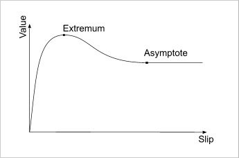

UDN
Search public documentation:
VehiclesTechnicalGuideJP
English Translation
中国翻译
한국어
Interested in the Unreal Engine?
Visit the Unreal Technology site.
Looking for jobs and company info?
Check out the Epic games site.
Questions about support via UDN?
Contact the UDN Staff
中国翻译
한국어
Interested in the Unreal Engine?
Visit the Unreal Technology site.
Looking for jobs and company info?
Check out the Epic games site.
Questions about support via UDN?
Contact the UDN Staff
UE3 ホーム > ゲームプレイプログラミング > ビークル システムのテクニカルガイド
ビークル（乗り物）システムのテクニカルガイド
概観
Vehicle （ビークル）クラス
Vehicle （ビークル）
これは、すべてのビークルの基本クラスです。これには、基本的な制御入力である Steering （方向操作）、Throttle （スロットル）、Rise （上昇）が含まれています。また、コンピュータプレイヤーがビークルを操縦できるようにするための AI コードの多くに相当するスタブも含まれています。ビークルに乗り降りするためのコードも含まれています。固定した砲塔などのようなものを作成する場合には、Vehicle をサブクラス化する必要があるでしょう。+
Vehicle Properties (click to view)
AI
- bTurnInPlace - true の場合、このビークルがその場で旋回できることを AI に伝えます。
- bSeparateTurretFocus - true の場合、ビークルが砲塔タイプの武器をもち、ビークルが向いている方向とは別に照準を定めることができることを AI に伝えます。
- bFollowLookDir - true の場合、ビークルの回転がカメラの回転に従うことを AI に伝えます。
- bHasHandbrake - true の場合、ビークルがハンドブレーキをかけることができるということを AI に伝えます。ビークルを操縦する場合に使用されます。
- bScriptedRise - true の場合、ビークルが空中に浮遊することを AI に伝えます。動きが取れなくなった場合や目的地に到着した場合に使用されます。
- bDuckObstacles - true の場合、障害物を確認させて避けるように AI に指示します。
- bAvoidReversing - true の場合、絶対に必要な場合を除いて、バックの使用を避けるように AI に指示します。
- bRetryPathfindingWithDriver - true の場合、ビークルのパスファインドに失敗したときに歩き続けるように AI に指示します。
- DriverDamageMult - ビークルの中にいる場合にドライバーがこうむるダメージのための乗数です。
- MoementumMult - ビークルへのダメージによって用いられるモメンタムのための乗数です。
- CrushedDamageType - ビークルが何かを押しつぶす場合に用いられるダメージの種類です。
- MinCrushSpeed - 何かを押しつぶすために必要となるビークルの最低速度です。
- ForceCrushPenetration - 速度に無関係に、あるものを押しつぶす前に許容される最大貫通力です。
- ViewPitchMin - Pawn から継承されます。ビークルのカメラに可能な最小のピッチ回転です。
- ViewPitchMax - Pawn から継承されます。ビークルのカメラに可能な最大のピッチ回転です。
- Driver - このビークルを運転する Pawn を参照します。
- bDriving - true の場合、ビークルには運転者が存在するようになります。
- ExitPositions - ビークルとの相対的位置についての配列で、プレイヤーがビークルから降りる場合にプレイヤーを配置させるためのものです。何も指定されない場合は、オプションの自動配置システムが使用されます。
- ExitRadius - 自動配置システムを使用する場合に、プレイヤーが降りると配置されるビークルからの距離です。ビークルの前後左右のこの距離にプレイヤーを配置しようとします。
- ExitOffset - 降りたプレイヤーを配置する場合に使用する追加オフセットです。
- bDriverIsVisible - true の場合、ビークルの運転者がレンダリングされます。
- bAttachDriver - true の場合、運転者が乗るとビークルにアタッチされます。
- Mesh - Pawn から継承されます。 SkeletalMeshComponent は、ビークルのビジュアルコンポーネントを表します。
- Steering （方向操作）- 値は -1 から 1 までをとり、プレイヤーがビークルを左右に方向操作する場合の方向を表します。デフォルトでは、A および D のキーによって操作されます。
- Throttle - 値は -1 から 1 までをとり、プレイヤーからの前方向後方向への入力を表します。デフォルトでは、W および S のキーによって操作されます。
- Rise - 値は -1 から 1 までをとり、プレイヤーからの上方向下方向への入力を表します。デフォルトでは、スペースキーおよび C のキーによって操作されます。
- bIgnoreStallZ - true の場合、ビークルは、レベルのワールドプロパティにおいて指定された StallZ 値以上の高度まで上昇し続けることができます。
+
Vehicle Functions (click to view)
AI
- GetMaxRiseForce - ビークルの最大上昇力を返します。
- GetTargetLocation [RequestedBy] [bRequestAlternateLoc] - ビークルに照準を合わせている場合にターゲットとすべき最善の位置を返します。
- RequestedBy - オプション項目です。ビークルをターゲットとしているアクタを参照します。
- bRequestAlternateLoc - オプション項目です。true の場合、複数ある場合に 2 番目の位置を返します。この実装では使用されません。
- ContinueOnFoot - 運転者が AI の場合に、運転者を強制的にビークルから降ろし、運転者がビークルを退去したか否かを返します。パスが徒歩で継続できる場合のみ、パスファインドのコードから呼び出されます。
- EncroachingOn [Other] - ビークルが指定されたアクタを侵犯したりそれと重なったりした場合、あるいは、指定されたアクタをそこから排除することができない場合に、エンジンによって呼び出されます。
- Other - ビークルが侵犯しているアクタを参照します。
- PancakeOther [Other] - 指定した Pawn を押しつぶすのに大ダメージを与える際に EncroachingOn() によって呼び出されます。
- Other - 押しつぶす Pawn を参照します。
- TakeRadiusDamage [InstigatedBy] [BaseDamage] [DamageRadius] [DamageType] [Momentum] [HurtOrigin] [bFullDamage] [DamageCauser] [DamageFallowExponent] - ビークルと運転者にダメージを与えます。指定されたダメージ元からビークルの距離に基づいてスケーリングされます。
- InstigatedBy - このダメージを与える Controller を参照します。
- BaseDamage - ダメージ元において適用される最大ダメージを保持します。
- DamageRadius - ダメージを与えることができる、ダメージ元からの最大距離を保持します。ダメージ元とこの距離の間でスケーリングされます。
- DamageType - 与えるダメージの種類を保持します。
- Momentum - ビークルに影響を与えるモメンタムの量を保持します。
- HurtOrigin - 適用するダメージの元を保持します。最大ダメージはこの位置で与えられます。
- bFullDamage - true の場合、ダメージ元からの距離に応じてダメージがスケーリングされることはありません。最大ダメージは、範囲内全域に渡って与えられます。
- DmaageCauser - ダメージを与えるアクタを参照します。
- DamageFalloffExponent - 範囲内におけるダメージ減少のための指数を保持します。デフォルトでは、線形の減少で 1.0 に設定されています。
- DamageRadiusDamage [DamageAmount] [DamageRadius] [EventInstigator] [DamageType] [Momentum] [HitLocation] [DamageCauser] [DamageFalloffExponent] - ビークルに与えられるダメージが運転者にも与えられるべきか否かを決定し、もしそうであれば、Driver 上にある TakeRadiusDamage() を呼び出します。
- DamageAmount - ダメージ元において適用される最大ダメージ量を保持します。
- DamageRadius - ダメージを与えることができる、ダメージ元からの最大距離を保持します。ダメージ元とこの距離の間でスケーリングされます。
- EventInstigator - このダメージを与える Controller を参照します。
- DamageType - 与えるダメージの種類を保持します。
- Momentum - 運転者に影響を与えるモメンタムの量を保持します。
- HitLocation - 適用するダメージの元を保持します。最大ダメージは、範囲内全域に渡って与えられます。
- DamageCauser - ダメージを与えるアクタを参照します。
- DamageFalloffExponent - 範囲内におけるダメージ減少のための指数を保持します。デフォルトでは、線形の減少で 1.0 に設定されています。
- Destroy - ビークルが破壊された場合にエンジンによって呼び出されます。
- Destroyed_HandleDriver - ビークルが破壊された場合に運転者の除去を処理するために呼び出されます。
- TakeDamage [Damage] [EventInstigator] [HitLocation] [Momentum] [DamageType] [HitInfo] [DamageCauser] - 親クラスから継承されます。ビークルにダメージを適用します。DamageType ビークルスケーリング値を使用して、受け取るダメージ量を調整します。
- Damage - 与えられるダメージ量を保持します。
- EventInstigator - このダメージを与える Controller を参照します。
- HitLocation - ダメージが与えられた位置を保持します。 * Momentum - ビークルに影響を与えるモメンタムを保持します。
- DamageType - 与えるダメージの種類を保持します。
- HitInfo - ダメージの原因となった打撃に関する情報を保持します。
- DamageCauser - ダメージの原因となったアクタを参照します。
- AdjustDriverDamage [Damage] [InstigatedBy] [HitLocation] [Momentum] [DamageType] - 運転者に加えられているダメージの受け取り量を調整します。ダメージを受けているときに、運転者の Pawn クラスから呼び出されます。
- Damage - 与えられるダメージの元の量を保持します。
- InstigatedBy - ダメージの原因となっている Controller を参照します。
- HitLocation - ダメージの原因となった打撃の位置を保持します。
- Momentum - 運転者に影響を与えるモメンタムの量を保持します。
- DamageType - 与えるダメージの種類を保持します。
- DriverDied [DamageType] - ビークル内部にいるときに運転者が死んだ場合、Driver および Controller の除去を処理します。
- DamageType - 運転者の死の原因となるダメージの種類を保持します。
- NotifyDriverTakeHit [InstigatedBy] [HitLocation] [Damage] [DamageType] [Momentum] -
- GetDefaultCameraMode [RequestedBy] - プレイヤーがビークルの中にいるときに使用するデフォルトのカメラモードを返します。
- RequestedBy - カメラモードを必要としている Controller を参照します。大抵は、ビークル のController です。
- CanEnterVehicle [P] - 所定の Pawn がこのビークルに乗ることができるか否かを返します。たとえば、利用可能な座席がある場合や Pawn が他のビークルをまだ運転していない場合などが条件になります。
- P - ビークル内に配置すべき Pawn を参照します。
- AnyAvailableSeat - ビークル内に利用可能な座席があるか否かを返します。
- TryToDrive [P] - 所定の Pawn がビークルの運転者になることができるか否かを返します。
- P - 運転者になる Pawn を参照します。
- DriverEnter [P] - Pawn が死んでいない場合にビークルの運転者として配置し、それが成功したか否かを返します。この時点で、運転者の Controller がビークルの Controller になります。
- P - ビークルに乗る Pawn を参照します。
- AttachDriver [P] - 運転者をビークルにハードアタッチします。また、bDriverIsVisible が false の場合に運転者を非表示にします。 StartDriving() の中で運転者によって Pawn クラスから呼び出されます。 BattachDriver が true の場合にのみ実行されます。すべてのクライアント上で呼び出されます。
- P - アタッチする運転者を参照します。
- DetachDriver [P] - 現在の運転者をビークルからデタッチするための関数スタブです。 StopDriving() の中で運転者によって Pawn クラスから呼び出されます。すべてのクライアント上で呼び出されます。
- GetExitRotation [C] - 降りるときに運転者を配置するのに使用する回転を返します。
- C - 運転者の Controller を参照します。
- DriverLeave [bForceLeave] - プレイヤーがビークルから降りたい場合に、PlayerController から呼び出されます。運転者をビークルからデタッチして、ワールドの中に配置します。また、運転者を Controller の帰属に戻します。
- bForceLeave - true の場合、運転者を強制的にビークルから降ろします。これは、運転者を配置するための適当な位置が見つからない場合でも実行されます。ビークルの GetTargetLocation() に運転者を配置します。
- DriverLeft - 運転者をクリアーして、bDriving を false に設定します。
- PlaceExitingDriver [ExitingDriver] - 運転者がビークルを降りるときに配置する適切な位置を見つけようとします。また、それが成功したか否かを返します。
- ExitingDriver - オプション項目です。ビークルを降りる運転者を参照します。指定されていない場合は、現在の運転者になります。
- FindAutoExit [ExitingDriver] - ビークルの前後左右に降りる位置を見つけようとします。また、それが成功したか否かを返します。
- ExitingDriver - ビークルを降りる運転者を参照します。
- TryExitPos [ExitingDriver] [ExitPos] [bMustFindGround] - FindAutoExit() によって生成された降り位置をそれぞれ個別にテストし、運転者がその位置に配置できるか否かを返します。
- ExitingDriver - ビークルを降りる運転者を参照します。
- ExitPos - テストする降り位置を保持します。
- bMustFindGround - true の場合、フロアを探すトレースが何かにぶつからなければ、テストに成功しません。
- GetEntryLocation - ビークルの乗り位置を返します。デフォルトでは、ビークルの位置に設定されています。
- SetInputs [InForward] [InSrafe] [InUp] - ビークルの Rise、Steering、Throttle の各値を手動で設定するためのインターフェースを提供します。
- InForward - ビークルの Throttle 値を保持します。
- InStrafe - ビークルの Steering 値を保持します。
- InUp - ビークルの Rise 値を保持します。
- SetDriving [b] - ビークルの運転ステータスである bDriving を設定します。
- b - ビークルの新たな運転ステータスを保持します。
- DrivingStatusChanged - 運転ステータスが変更された場合に呼び出され、あらゆる必要なアクションが実行できるようになります。デフォルトでは、Rise、Steering、Throttle の各値がゼロ設定されています。
- ZeroMovementVariables - Rise、Steering、Throttle の各値をゼロ設定します。
SVehicle
Svehicle クラスは、剛体物理ベースの動きをビークルシステムに導入します。このクラスには、車両ビークルをサポートするパラメータがすべて含まれています。また、シミュレーションオブジェクトを利用することによって、様々な種類のビークル（車両、飛行、ホーバリング、トレッドなど）を作成します。+
SVehicle Properties (click to view)
ダメージ
- RadialImpulseScaling - HurtRadius() 関数を通じて実行されたダメージによって与えられたビークルへの衝撃をスケーリングする量を保持します。
- BaseOffset - カメラの位置のための、基本 Vector オフセットです。
- CamDist - カメラのローカル X 軸に沿って、基本位置からカメラをオフセットする距離です。
- DriverViewPitch - LookToSteer のために使用される運転者のピッチを保持します。
- DriverViewYaw - LookToSteer のために使用される運転者のヨーを保持します。
- SimObj - ビークルのシミュレーションの多くを処理する SvehicleSimBase オブジェクトです。詳細については、 SVehicleSimBase のセクションを参照してください。
- Wheels - 各車輪のパラメータを保持している SvehicleWheel オブジェクトの配列です。（車両ビークルの場合）
- COMOffset - ローカル空間における、ビークルの重心位置です。
- InertiaTensorMultiplier - ビークルの慣性テンソルをスケーリングします。これは、ビークルが各軸を中心にしてどのくらい容易にスピンするかということに影響を与えるもので、質量の角相当量に当たります。
- MaxSpeed - ビークルが移動する際に認められる最大速度です。
- MaxAngularVelocity - ビークルが達することができる最大角速度です。
- bUseSuspensionAxis - true の場合、車輪がグラウンドと接触すると、車輪の法線は常にサスペンション軸上において後ろ向きになります。false の場合、車輪が接触すると、車輪がぶつかるグラウンドの表面法線が利用されることになります。
- HeavySuspensionShiftPercentage - SuspensionHeavyShift() が呼び出されるために、Suspension （サスペンション）が 1 度に進まなければならない、最大許容距離に対するパーセンテージです。
- bStayUpright - ワールドにおける直立維持制約を使用します。
- StayUprightRollResistAngle - ビークルがロールに抵抗する角度です。
- StayUprightPitchResistAngle - ビークルがピッチに抵抗する角度です。
- StayUprightStiffness - 制限角度を超えた場合の直立弾性の剛性です。
- StayUprightDamping - 制限角度を超えた場合の直立弾性の減衰です。
- bCanFlip - ビークルがプレイヤーによって直立できる場合は、true とします。
- UprightLiftStrength - 直立させるときにビークルに加える吊り上げ力をスケーリングします。
- UprightTorqueStrength - 直立させるときにビークルに加えるトルクをスケーリングします。
- UprightTime - 直立させる力/トルクを加える秒数です。
- bVehicleOnGround - SvehicleWheel が 1 つでも グラウンドに現在接触している場合は、true とします。（シャーシーなどとの接触は無視します）。
- TimeOffGround - bVehicleOnGround が false になっている時間です。
- bVehicleOnWater - SVehicleWheel が 1 つでも 水面に現在接触している場合は、true とします。
- bIsInverted - ビークルがほぼ転覆している場合は、true とします。
- bChassisTouchingGround - ビークルのサーシーとグラウンドが １ カ所でも接触していると、true とします。
- bWasChassisTouchingGroundLastTick - 最後のティックにおいて、ビークルのサーシーとグラウンドが １ カ所でも接触していたら、true とします。
- EngineSound - エンジン稼働の環境音のための AudioCopnent です。ピッチは、RPM に基づいてモジュレートされます。
- SquealSound - タイヤがきしむ音を出すための AudioComponent ボリュームは、きしみ量に基づいてモジュレートされます。
- CollisionSound - ビークルが他のオブジェクトと衝突したときに再生する SoundCue です。
- EnterVehicleSound - 運転者がビークルに乗ったときに再生する SoundCue です。
- ExitVehicleSound - 運転者がビークルから降りるときに再生する SoundCue です。
- CollisionIntervalSeconds - CollisionSound が再び再生が可能になるまでに、衝突と衝突の間で経過しなければならない最小秒数です。
- SquealThreshold - スリップ速度の限界値で、この値よりも小さい場合はタイヤのきしみ音が聞こえません。
- SquealLatThreshold - 横向きスリップ速度の限界値で、この値よりも小さい場合はタイヤのきしみ音が聞こえません。
- LatAngleVolumeMult - 横向きのスリップによるきしみのボリュームレベルを、直線的なスリップによるきしみのボリュームレベルに相対させて算出するために使用される乗算子です。
- EngineStartOffsetSecs - エンジン始動音とアイドリング音開始のタイムラグを秒数で表すものです。
- EngineStopOffsetSecs - エンジン停止音再生とアイドリング音停止のタイムラグを秒数で表すものです。
+
SVehicle Functions (click to view)
表示
- CalcCamera [fDeltaTime] [out_CamLoc] [out_CamRot] [out_FOV] - Pawn から継承されます。このビークルの中にいるプレイヤーのためのカメラがもつビューポイントを計算します。
- fDeltaTime - 最後の更新が行われてから経過した時間です。
- out_CamLoc - 現在のカメラの位置を保持するとともに新たなカメラの位置を出力します。
- out_CamRot - 現在のカメラの回転を保持するとともに新たなカメラの回転を出力します。
- out_FOV - 現在の FOV (Field of View: 視野角)を保持するとともに、新たな FOV を出力します。
- TurnOff - Pawn から継承されます。サウンド、アニメーション、物理などを停止します。
- AddForce [Force] - 指定されたベクターを使用して一定の力を加えます。
- Force - 加える力の方向と強さの両方を表すベクターです。
- AddImpulse [Impulse] - 指定されたベクターを使用して単一の衝撃力を加えます。
- Impulse - 加える衝撃の方向と強さの両方を表すベクターです。
- AddTorque [Torque] - 指定されたベクターを使用してトルク（回転力）を加えます。
- Torque - 加えるトルクの方向と強さの両方を表すベクターです。
- AddVelocity [NewVelocity] [DamageType] [HitInfo] - Pawn から継承されます。ビークルに指定された速度を加えます。剛体物理が使用されているため、Pawn のバージョンをここでオーバーライドする必要があります。
- IsSleeping - ビークルの物理を制御する物理シミュレーションがスリープしているか否かを返します。
- HasWheelsOnGround - 現在ビークルの車輪がグラウンドと接触しているか否かを返します。
- SuspensionHeavyShift [Delta] - ビークルのサスペンションが大きく動くときに、エンジンによって呼び出されます。
- Delta - シフトの量を保持します。
- PostTeleport [OutTeleporter] - ビークルが更新位置などにテレポートした後に呼び出されます。
- OutTeleporter - 目的地におけるテレポータ （teleporter）を参照します。
- SetWheelCollision [WheelNum] [bCollision] - ビークルの特定の車輪について、そのコリジョンを on または off にします。
- WheelNum - Wheel 配列内の、コリジョンを修正すべき車輪のインデックスです。
- bCollision - true の場合、車輪のコリジョンを有効にします。そうでない場合は、コリジョンを無効にします。
- RigidBodyCollision [HitComponent] [OtherComponent] [RigidCollisionData] [ContactIndex] - ビークルの剛体が他のオブジェクトと衝突した場合に、エンジンによって呼び出されます。CollisionSound SoundCue を再生します。
- HitComponent - 衝突を受けたビークルのコンポーネントを参照します。
- OtherComponent - 衝突を受けた他のオブジェクトのコンポーネントを参照します。
- RigidCollisionData - コリジョンに関するデータを保持します。
- ContactIndex - コリジョンの接触ポイントのインデックスを保持します。
- PostInitAnimtree [SkelComp] - AnimTree が初期化された後でエンジンによって呼び出されます。参照を取得して、ビークルの AnimTree において、その参照を SkelControlWheel コントローラーに設定します。ただし、ビークルに車輪がある場合です。
- SkelComp - AnimTree が初期化された SkeletalMeshComponent を参照します。
- InitVehicleRagdoll [RagdollMesh] [RagdollPhysAsset] [ActorMove] [bClearAnimtree] - 物理のために単一ボディを使用することから、完全に関節化されたラグドールのような骨格を使用するように、ビークルを変化させます。
- RagdollMesh - 新たに使用する骨格メッシュで、完全な骨格をもちます。
- RagdollPhysAsset - 新たな骨格メッシュのための物理アセットです。
- ActorMove - 変化中にビークルを変位させるために使用するベクターです。ラグドールメッシュがグラウンドに貫通するのを防ぐために使用することができます。
- bClearAnimtree - true の場合、このビークルのための現在の AnimTree への参照をクリアーします。
- StopVehicleSounds - TurnOff() から呼び出されます。エンジン、および、きしみ音のオーディオコンポーネントの再生を停止します。
- StartEngineSound - エンジン音オーディオコンポーネントの再生を開始します。
- StartEngineSoundTimed - EngineStartOffsetSecs 秒後に、エンジン音オーディオコンポーネントの再生を開始するタイマーをスタートさせます。
- StopEngineSound - エンジン音オーディオコンポーネントの再生を停止します。
- StopEngineSoundTimed - EngineStartOffsetSecs 秒後に、エンジン音オーディオコンポーネントの再生を停止するタイマーをスタートさせます。
- VehiclePlayEnterSound - EnterVehicleSound SoundCue を再生し、StartEngineSoundTimed() を呼び出します。
- VehiclePlayExitSound - ExitVehicleSound を再生し、StopEngineSoundTimed() を呼び出します。
UDKVehicleBase
UDKVehicleBase クラスは、Svehicle を拡張したもので、複数の座席をもつビークルのための基本的なサポート、および vCTF のゲームにおける旗のようなゲームオブジェクトを持ち運ぶためのサポートが追加されています。+
UDKVehicleBase Properties (click to view)
乗り降り
- bShouldEject - true の場合、運転者がビークルを降りるときに排出されます。現在の運転者がイジェクトされる必要があり場合に設定されるプロパティです。
+
UDKVehicleBase Functions (click to view)
AI
- NeedToTurn [Targ] - Pawn から継承されます。AI が指定された位置に向いたり発砲したりするためには、向きを変える必要があるか否かを返します。
- Targ - 視線を向ける位置および発砲の的となる位置を保持します。
- SwitchWeapons [NewGroup] - プレイヤーの現在の座席位置を変更するために、UTPlayerController によって SwitchWeapon() から呼び出されます。（デフォルトでは、キーボードの数字キーを使用します）。
- NewGroup - 変更先のグループ/座席を保持します。座席のインデックスは、NewGroup - 1 になります。
- ServerChangeSeat [RequestedSeat] - サーバー上で呼び出されます。すべてのクライアント上で座席の変更が同期されるようにするための関数スタブです。サブクラスでこの関数をオーバーライドする必要があります。
- RequestedSeat - 変更先の座席のインデックスを保持します。
- AdjacentSeat [Direction] [C] - クライアント上で呼び出されます。ビークル内の隣接する座席への変更を必要とします。
- Direction - 移動する方向を保持します。-1 は前の座席を意味します。1 は次の座席を意味します。
- C - 座席を変更するプレイヤーの Controller を参照します。
- ServerAdjacentSeat [Direction] [C] - サーバー上で呼び出されます。プレイヤーを隣接する座席に移動させるための関数スタブです。サブクラスでこの関数をオーバーライドする必要があります。
- Direction - 移動する方向を保持します。 -1 は前の座席を意味します。1 は次の座席を意味します。
- C - 座席を変更するプレイヤーの Controller を参照します。
- EjectDriver - 運転者をビークルから高速で排出します。DriverLeft() によって呼び出されます。
- HoldGameObject [GameObj] - GameObject をビークルにアタッチするために、エンジンによって呼び出される関数スタブです。サブクラスでこの関数をオーバーライドする必要があります。
- GameObj - ビークルにアタッチする GameObject を参照します。
UDKVehicle
UDKVehicle クラスでは、ビークルの武器に関する基本的なサポートが追加されています。またそれに加えて、さまざまなアニメーション、パーティクルエフェクト、サウンドを再生するための柔軟性に富むシステムが、その初歩段階として導入されています。さらに、モーフターゲットを使って位置固有のダメージを表示する機能をもっています。 追加されたサブシステムの詳細については、次のセクションを参照してください。- ビークルの座席と武器 - 座席と武器をビークルに追加するために必要となる情報です。
- ビークルのイベント - ビークルのイベントシステムについての情報です。
- ビークルのダメージシステム - 位置固有ダメージシステムに関する情報です。
+
UDKVehicle Properties (click to view)
AI
- ObjectiveGetOutDist - AI によって制御されている場合で、目標がトリガーされなければならないにもかかわらずビークル自体によってトリガーされることが不可能な場合、AI がこのプロパティ分だけ離れてビークルから出ようとします。
- bUseAlternatePaths - true の場合、AI は分隊の代替パスを使用して目標へ向かうことを検討します。（遅いなどで）迂回が困難なビークルや迂回が無用な程に強力なビークルでは、このプロパティを false に設定します。
- BurnOutMaterialInstances - マテリアルインスタンスおよび関連データの配列です。これらは、ビークルが機能停止したり、焼かれて金属の残骸になった場合に、そのメッシュの通常マテリアルに代わるために使用されるものです。
- FireDamageThreshold - Health / MaxHealth という比率を表し、この値に達するとビークルが燃え始め、火から継続的なダメージを受けるようになります。
- FireDamagePerSec - 燃えているときに毎秒ごとに加わるダメージ量です。
- AccruedFireDamage - これまで加わったダメージ量です。
- UpsideDownDamagePerSec - ビークルが転覆しかつ使用されていない場合に毎秒ごとに加わるダメージ量です。
- OccupiedUpsideDownDamagePerSec - ビークルが転覆しかつ使用されている場合に毎秒ごとに加わるダメージ量です。
- WaterDamage - ビークルが水没している場合に毎秒ごとに加わるダメージ量です。
- bTakeWaterDamageWhileDriving - true の場合、運転されているビークルが水によるダメージを受け取ります。
- AccumulatedWaterDamage - TakeWaterDamage() が前回呼び出されてダメージが適用されて以来加えられた水によるダメージの量です。
- DestroyOnPenetrationThreshold - ビークルを破壊されるまでに許容される貫通の最大量です。
- DestroyOnPenetrationDuration - ビークルが破壊されるまでに DestroyOnPenetrationThreshold を超えて貫通が可能な最大時間量です。
- KillerController - ビークルをキルする (killing) Controller を参照します。
- MinRunOverSpeed - 他のプレイヤーに衝突してダメージを与えるのに必要となるビークルの移動最小速度です。
- bShowLocked - true の場合、このビークルの HUD 上に No Entry （乗り込み不可）というインジケータが表示されます。
- bTeamLocked - true の場合、このビークルと同じチームのプレイヤーだけが乗ることができます。
- ShowLockedMaxDist - ロックされたインジケータが表示される、ビークルからカメラまでの最大距離です。
- VehicleEffects - VehicleEffect データをもつ構造体の配列です。これには、ビークルのために使用されるさまざまなエフェクトに関する情報が含まれます。
- WheelParticleEffects - マテリアル固有のパーティクルエフェクトの配列です。これは、bUseMaterialSpecificEffects が true に設定されていれば、アタッチされている UDKVehicleWheels すべてに適用されるものです。
- MaxWheelEffectDistSq - 車輪がグラウンドから離れていてもサウンドおよびパーティクルエフェクトを再生できる最大許容距離です。
- GroundEffectIndices - グラウンドエフェクト、すなわちビークルがグラウンドから一定の距離以内にある場合に表示されるエフェクトとして使用されるエフェクトを指定する、VehicleEffects 配列の中に入るインデックスの配列です。
- MaxGroundEffectDist - ビークルがグラウンドから離れている場合でもグラウンドエフェクトを再生できる最大許容距離です。
- GroundEffectDistParamName - エフェクトの強度を制御するグラウンドエフェクトのパーティクルシステム内にあるパラメータ名です。 CurrentGroundDist / MaxGroundEffectDist の結果として、値は 0.0 から 1.0 の間に設定されます。
- WaterGroundEffect - ビークルが水面より上に位置している場合にグラウンドエフェクトのために使用される ParticleSystem です。
- WaterEffectType - 水を表現するマテリアルのタイプ名です。現在のグラウンドマテリアルのタイプがこの名前に一致する場合、水のグラウンドエフェクトに変更するために使用されます。
- ContrailEffectIndices - 飛行機雲として使用されるエフェクトを指定する VehicleEffects 配列に入るインデックスの配列です。
- ContrailColorParamName - 飛行機雲のパーティクルシステムでカラーを設定するために使用するパラメータの名前です。このパラメータに渡される値はビークルの速度に基づきます。
- HoverboardDust - ホーバーボードの下でエフェクトを再生するための ParticleSystemComponent です。
- bEjectKilledBodies - true の場合、ビークルの運転者が死ぬと排出されてラグドール化されます。true でない場合は、即座に破壊されます。
- bEjectPassengersWhenFlipped - true の場合、ビークルが転覆すると運転者を含む乗員全員が排出されます。
- Seats - さまざまな座席およびビークルの中でプレイヤーが使用できる武器の一方または両方を作成するのに使用する情報を含む VehicleSeats の配列です。詳細については、 ビークルの座席と武器 のセクションを参照してください。
- bAllowedExit - true の場合、運転者がビークルを去ることが可能になります。
- Team - このビークルが現在所属しているチームです。
- VehicleAnims - 特定のイベントが発生した場合に、ビークル上で再生される各種アニメーションについての情報を含んでいる VehicleAnims の配列です。詳細については、 ビークルのアニメーション セクションを参照してください。
- DrivingAnim - 運転者が可視化されていて運転している場合に、運転者上で再生するアニメーションの名前です。
- DamageParamScaleLevels - ダメージマテリアルのパラメータ名をスケーリングの係数にマッピングする配列です。このパラメータ値は、現在のダメージモーフターゲットがもっているヘルス率（CurrentHealth / DefaultHealth）を取得することによって設定されます。これによって、値を 0.0 から 1.0 までスケーリングして、マテリアルにおけるパラメータの使用に合わせることができるようになります。
- DamageSkelControls - ビークルの AnimTree におけるダメージ骨格 Controller の配列です。
- DamageMorphTargets - ダメージモーフターゲットデータをもつ構造体の配列です。ダメージシステムを制御するために使用されます。
- DamageMaterialInstance - 動的に作成されたマテリアルインスタンスを参照します。このインスタンスは、ビークルのマテリアルから作成され、ビークルに適用することによってダメージパラメータにアクセスできるようにするものです。
- bNoZDampingInAir - true の場合、ビークルが空中にある間は、ビークルの速度の Z 成分に減衰が適用されません。
- bNoZDamping - true の場合、ビークルがグラウンド上にあっても、ビークルの速度の Z 成分に減衰が適用されません。
- bIsDisabled - true の場合、ビークルが無効になります。
- bJostleWhileDriving - true の場合、ビークルは、ランダムな衝撃を適用することによって、リアルなホーバリングをシミュレートします。飛行ビークルに役立ちます。
- bFloatWhenDriven - true の場合、ビークルは -0.1 の重力 Z 値を使用して、浮遊をシミュレートします。飛行ビークルに役立ちます。
- CustomGravityScaling - 重力 Z 値のためのビークル固有乗算子です。個々のビークル上で重力をカスタマイズできます。
- bDisableRepulsorsAtMaxFallSpeed - true の場合、ビークルの負の Z 速度が運転者の MaxFallSpeed 値よりも大きいときは、ビークルのリパルサー（repulsor）が無効になります。
- TireAudioComp - タイヤのサウンドを再生するために使用する AudioComponent です。
- TireSoundList - タイヤがさまざまなタイプのマテリアル上にあるときに再生される MaterialSoundEffects の配列です。
- CurrentTireMaterial - 現在タイヤの下にあるマテリアルのタイプを保持します。
- ScrapeSound - ビークルのボディが他のオブジェクトとぶつかってスクラップになるとスクラップサウンドが再生されますが、そのときに使用される AudioComponent です。
- VehicleSounds - VehicleSound データをもつ構造体の配列です。構造体には、各種イベントのために再生する SoundCues が含まれます。
- LargeChunkImpactSound - ビークルが 20000 よりも大きな程度の力によって衝撃を受けた場合に再生する SoundCue です。
- MediumChunkImpactSound - ビークルが 4000 よりも大きな程度の力によって衝撃を受けた場合に再生する SoundCue です。
- SmallChunkImpactSound - ビークルが 1000 よりも大きな程度の力によって衝撃を受けた場合に再生する SoundCue です。
- bHomingTarget - true の場合、このビークルを自動追尾武器によってロックオンすることができます。
- WeaponRotation - ビークルに搭載された主力武器の現在の回転を表します。
+
UDKVehicle Functions (click to view)
AI
- JumpOutCheck - エンジンによって呼び出される関数スタブです。これは、ビークルが目的地に向かって急行している場合に、ボットが飛び出すチャンスを与えるものです。サブクラスでこの関数をオーバーライドする必要があります。
- OnTouchForcedDirVolume [Vol] - ビークルが ForcedDirVolume とぶつかったことをビークルに対して通知します。この関数で false を返すと、ビークルがボリュームを無視します。
- Vol - 接触を受けた ForcedDirvolume を参照します。
- GetRanOverDamageType - このビークルで人を引いたときに使用されるダメージのタイプを返します。
- LockOnWarning [IncomingMissile] - 自動追尾型発射物が到来しつつあることをビークルの運転者に警告します。
- IncomingMissile - このビークルにロックオンしている発射物を参照します。
- ReceivedHealthChange - クライアントがヘルスの変化を受け取るときに、エンジンによって呼び出される関数スタブです。サブクラスでこの関数をオーバーライドする必要があります。
- CheckAutoDestruct [InstigatorTeam] [CheckRadius] - ビークルが自爆するか否かを返します。すなわち、ビークルが敵や目的に十分に接近しているか否かが問題になります。
- InstigatorTeam - 自爆を引き起こしたプレビューの TeamInfo です。
- *CheckRadius*- 自爆するにはどのくらい近づく必要があるかを表します。
- SelfDestruct [ImpactedActor] - ビークルが自爆する際に、エンジンによって呼び出される関数スタブです。サブクラスでこの関数をオーバーライドする必要があります。
- ImpactedActor - 自爆から最大ダメージを受けるアクタを参照します。
- RBPenetrationDestroy - 大規模な貫通が生じた場合にビークルを破壊します。
- TakeWaterDamage - 水のダメージを受けているときに、毎ティックごとにエンジンによって呼び出される関数スタブです。サブクラスでこの関数をオーバーライドする必要があります。
- TakeFireDamage - 火のダメージを受けているときに、エンジンによって呼び出される関数スタブです。サブクラスでこの関数をオーバーライドする必要があります。
- NativePostRenderFor [PC] [Canvas] [CameraPosition] [CameraDir] - ビークルが HUD オーバーレイを描画できるようにします。本来は、ロックされたアイコンを描画します。
- PC - ローカルプレイヤーの Controller を参照します。
- Canvas - 描画のための現在のキャンバスを参照します。
- CameraPosition - プレイヤーのカメラの現在位置を保持します。
- CameraDir - プレイヤーのカメラが現在向いている方向を保持します。
- SetHUDLocation [NewHUDLocation] - ビークルのためのアイコンが HUD 上で描画されるとき、その描画位置を設定します。
- NewHUDLocation - アイコンを描画するときの位置（ベクターの X 成分と Y 成分）を保持します。
- PlayTakeHitEffects - ビークルが衝撃を受けたときにヒットエフェクトを再生するために、エンジンによって呼び出される関数スタブです。サブクラスでこの関数をオーバーライドする必要があります。
- UpdateHoverboardDustEffect [DustHeight] - ホーバーボードのほこりエフェクトを更新するために、エンジンによって呼び出される関数スタブです。サブクラスでこの関数をオーバーライドする必要があります。
- DustHeight - グラウンドより上に位置するホーバーボードの高さを保持します。
- GetTeamNum - このビークルのチームナンバーを返します。
- InUseableRange [PC] [Dist] - ビークルが使用できる範囲内にあるか否かを返します。
- PC - ビークルを使用しようとしているプレイヤーの Controller を参照します。
- Dist - ビークルからプレイヤーまでの距離を保持します。
- InitDamageSkel - ビークルの Animtree において、ダメージ骨格 Controller で、DamageSkelControls 配列を満たします。
- UpdateDamageMaterial - ダメージシステムがヘルス値を更新するとき、ビークルに適用されているあらゆるマテリアルを更新します。
- ApplyMorphDamage [HitLocation] [Damage] [Momentum] - モーフターゲットを修正するために、ヒットダメージをダメージシステムに適用します。
- HitLocation - ヒットが生じた位置を保持します。
- Damage - 与えられたダメージ量を保持します。
- Momentum - ダメージによって与えられたモメンタムを保持します。
- MorphTargetDestroyed [MorphNodeIndex] - ダメージノードが破壊された場合に（ApplyMorphDamage の結果として）エンジンによって呼び出される関数スタブです。
- MorphNodeIndex - 破壊されたノードの DamageMorphTargets 配列についているインデックスを保持します。
- PostInitRigidBody [PrimComp] - 剛体シミュレーションが初期化された後で、エンジンによって呼び出される関数スタブです。ビークルが必要とするあらゆるカスタマイズされた物理の初期化を実行できるようにします。サブクラスでこの関数をオーバーライドする必要があります。
- PrimComp - RB 物理が初期化されたプリミティブコンポーネントを参照します。
- SeatWeaponRotation [SeatIndex] [NewRot] [bReadValue] - 指定された座席のための武器の回転を取得または設定します。
- SeatIndex - 座席のインデックスを保持します。
- NewRot - オプション項目です。座席の武器の回転に対して設定する新たな回転の値です。
- bReadValue - true の場合、座席の武器の回転を返します。true でない場合は、座席の武器の回転を NewRot に設定します。
- SeatFlashLocation [SeatIndex] [NewLoc] [bReadValue] - 指定された座席のためのフラッシュの位置を取得または設定します。
- SeatIndex - 座席のインデックスを保持します。
- NewLoc - オプション項目です。座席のフラッシュ位置に設定する新たな位置の値です。
- bReadValue - true の場合、座席のフラッシュ位置を返します。true でない場合は、座席のフラッシュ位置を NewLoc に設定します。
- SeatFlashCount [SeatIndex] [NewCount] [bReadValue] - 指定された座席のためのフラッシュカウントを取得または設定します。
- SeatIndex - 座席のインデックスを保持します。
- NewCount - オプション項目です。座席のフラッシュカウントに設定する新たなフラッシュカウント値です。
- bReadValue - true の場合、座席のフラッシュカウントを返します。true でない場合は、座席のフラッシュカウントを NewCount に設定します。
- SeatFiringMode [SeatIndex] [NewFireMode] [bReadValue] - 指定された座席のための発砲モードを取得または設定します。
- SeatIndex - 座席のインデックスを保持します。
- NewFireMode - オプション項目です。座席の発砲モードに設定する新たな発砲モードです。
- bReadValue - true の場合、座席の発砲モードを返します。true でない場合は、座席の発砲モードを NewFireMode に設定します。
- ForceWeaponRotation [SeatIndex] [NewRotation] - 指定された座席の武器の回転を新しい回転に強制的に設定します。ビークルをスポーンしているときにビークルファクトリによって使用されます。
- [SeatIndex] - 座席のインデックスを保持します。
- [NewRotation - 座席の武器の回転に設定する新たな回転です。
- GetSeatPivotPoint [SeatIndex] - 指定された座席のための回転の中心を返します。
- SeatIndex - 座席のインデックスを保持します。
- GetBarrelIndex [SeatIndex] - 指定された座席のための、現在使用中または発砲している銃身を返します。
- SeatIndex - 座席のインデックスを保持します。
UTVehicle
UTVehicle クラスでは、ビークル用ゲームプレイ固有機能のうちほとんどを実装するとともに、アニメーションおよびエフェクト、サウンドを再生するためのビークルイベントシステムのうち大部分を実装します。このクラスには、ビークルを制御するためのコンソール固有機能も多数含まれています。+
UTVehicle Properties (click to view)
AI
- bKeyVehicle - true の場合、このビークルが他より重要であると AI に認識されます。また、ミニマップ上でビークルを表示します。
- AIPurpose - このビークルのためにどのような種類のタスクを AI が使用すべきかを指定します。 AIP_Offense - ビークルは、攻撃的もしくは攻撃するタスクのためのみに使用されます。 AIP_Defense - ビークルは、防御的なタスクのためのみに使用されます。 AIP_Any - ビークルは、どのような目的のためにも使用することができます。
- bShouldLeaveForCombat - true の場合、敵に遭遇すると AI がこのビークルから去ります。
- MaxDesireability - このビークルが AI にとってどのくらい望ましいものであるかを決定します。
- HornAIRadius - クラクションが鳴ったときに AI がビークルで利用可能な座席につこうとすることができる、ビークルからの最大許容距離を表します。
- Reservation - ビークルに乗ろうとしている AI を参照します。複数の AI エンティティがすべて同一のビークルに乗ろうとすることを防止します。
- bShouldAutoCenterViewPitch - true の場合、このビークルの中にいるとき、ビークルが自動的にプレイヤーの視界の中心となります。
- SeatCameraScale - 座席固有のカメラオフセットのための乗算子です。
- bRotateCameraUnderVehicle - true の場合、カメラがビークルの下で回転できるようになります。その際、プレイヤーの視界は潜在的に妨げられます。
- bNoZSmoothing - true の場合、遅延カメラの Z 位置がスムージングされずに、でこぼこした乗車になります。
- bLimitCameraZLookingUp - true の場合、ビークルが上を向いているときにカメラが常にビークルの上方に位置するようになり、上昇する飛行ビークルにおけるクリッピングを防ぎます。
- bNnoFollowJumpZ - true の場合、ビークルがジャンプするときにカメラの Z 位置は変更しません。これによって、より劇的なジャンプに見えるようになります。
- CameraSmoothingFactor - 遅延カメラをスムージングするために使用するスムージングスケールです。値が高くなると、スムージング時間が短くなります。
- DefaultFOV - プレイヤーのカメラのために使用するデフォルトの視野角です。
- CameraLag - カメラを遅延させる時間量です。
- LookForwardDist - ビークルの前方一帯を見下ろすときにカメラを前方に移動させる際、その移動させる距離を表します。
- MinCameraDistSq - bCameraNeverHidesvehicle が true になっていない場合に、ビークルを非表示にし始める、カメラからビークルまでの（平方した）距離を表します。
- bCameraNeverHidesVehicle - true の場合、カメラがビークルにどれほど近づいてもビークルは決して非表示になりません。
- bStopDeathCamera - true の場合、機能停止時に保存された古いカメラ位置を使用して、デス カメラを中断します。
- bValidLinkTarget - true の場合、このビークルは Link Gun によって回復されます。
- LinkHealthMult - このビークルが Link Gun によって回復する量は、Link Gun のダメージ量に、この LinkHealthMult の値（ただし、0 より大きいこと）を掛け合わせたものに等しくなります。
- LinkedToCount - 現在このビークルにリンクしている Link Gun の数です。
- RanOverDamageType - このビークルによってひかれたプレイヤーが受けるダメージのために使用する DamageType です。
- VehicleDrowningDamageType - 水没しているときに受けるダメージのために使用する DamageType です。
- ClientHealth - ダメージシステムにおいて、モーフターゲットのためのクライアントサイドのヘルスを表します。複製されたHealth を受け取った時に必ず、あらゆるものをそれに合わせるために使用されます。
- ExplosionDamageType - ビークルの爆発によって生じるダメージを適用する際に使用する DamageType です。
- ExplosionDamage - ビークルの爆発によって生じるダメージの量です。
- ExplosionRadius - ビークルの爆発によってダメージが及ぶ半径です。
- ExplosionMomentum - ビークルの爆発によって生じるモメンタム量です。
- ExplosionInAirAngvel - 空中で爆発した場合にビークルが受けるスピンの量です。
- CollisionDamageMult - 他の剛体と衝突した場合に受けるダメージのための乗算子です。
- bReduceFallingCollisionDamage - true の場合、ビークルがそれより下に位置するオブジェクトと衝突する際に、衝突ダメージが減じられます。
- bHasWeaponBar - true の場合、このビークルのための武器バーが HUD 上に表示されます。
- bDrawHealthOnHUD - true の場合、運転者のヘルスに加えてビークルのヘルスが HUD 上に表示されます。
- bDriverCastsShadow - true の場合、運転者のメッシュは常にシャドウをキャストします。
- bDropDetailWhenDriving - true の場合、ローカルのプレイヤーがこのビークルを運転するとき、ビークルのディテールが省略されます。ただし、現在のゲームのモードが high detail （高詳細）モードになっていないことが条件となります。
- LightEnvironment - 動的シャドウのために、このビークルによって使用される DynamicLightEnvironment です。
- TeamBeaconPlayerInfoMaxDist - プレイヤーの情報が表示される、カメラからの最大許容距離を表します。
- HUDextent - 照準がビークル上にある否かを判定するために使用されるスケーリングの係数です。
- MapSize - ミニマップ上にこのビークルのアイコンを描画するためのスケールです。
- IconCoords - このビークルのアイコンのための、アイコンテクスチャ内における座標です。
- FlipToolTipIconCoords - このビークルのフリップツールティップのための、アイコンテクスチャにおける座標です。
- EnterToolTipIconCoords - このビークルのエンターツールティップアイコンのための、アイコンテクスチャにおける座標です。
- DropFlagIconCoords - このビークルのドロップフラグアイコンのための、アイコンテクスチャにおける座標です。
- DropOrbIconCoords - このビークルのドロップオーブアイコンのための、アイコンテクスチャにおける座標です。
- bPostRenderTraceSucceeded - true の場合、ポストレンダリング HUD アイコンの描画のためのトレースチェックが成功したことになります。
- TeamBeaconOffset - ロックされたアイコンなどのような情報を表示するために使用される、ビークルの位置からのオフセットです。
- PassengerTeamBeaconOffset - 乗員のアイコンを表示するために使用される、ビークルの位置からのオフセットです
- HUDIcons - このビークルのために HUD 上で描画するアイコンを含むテクスチャです。
- ExplosionLightClass - 爆発エフェクトのために使用するライトのクラスです。
- MaxExplosionLightDistance - 爆発のライトを作成するのに許容される、カメラから爆発までの最大距離です。
- bInitializedVehicleEffects - true の場合、ビークルのエフェクトがアタッチされています。
- DeathExplosion - デス（機能停止）時にスポーンされたエミッタを参照します。これは、すべてが燃焼され尽くしたときにエミッタを無効にするためのものです。
- TimeTilSecondaryVehicleExplosion - 最初のビークルの爆発があってから 2 回目の爆発を再生するまでの待機時間です。（2 回目の爆発は、何らかの状況によってまだ再生されていないことが想定されています。）
- DamageSmokeThreshold - ビークルがスモークエフェクトを再生開始するヘルス率（Health / HealthMax）です。
- MaxImpactEffectDistance - ヒット衝撃がエフェクトをスポーンするために許容される、カメラからの最大距離です。
- MaxFireEffectDistance - ビークルの火エフェクトを表示するために許容される、カメラからの最大距離です。
- ExplosionTemplate - ビークルが爆発したときに再生する ParticleSystem です。
- BigExplosionTemplate - ParticleSystems および最小距離の配列です。これは、ビークルの爆発からローカルプレイヤーまでの距離に基づいて、さまざまな爆発エフェクトを再生するために使用されます。
- SecondaryExplosion - ビークルの 2 回目の爆発のために再生する ParticleSystem です。最初の爆発後に時間差をともなって再生されるか、最初の爆発後にビークルが落下してグラウンドと衝突したときに再生されます。
- BigExplosionSocket - 大爆発をアタッチするソケットの名前です。None（なし）の場合、大爆発は決してアタッチされません。
- BurnOutTime - ビークルが燃え尽きるのに要する時間です。
- BurnTimeParameterName - 燃え尽きエフェクトを制御するのに使用されるマテリアルパラメータの名前です。
- BurnOutMaterial - 燃え尽きメッシュのために使用するチーム固有マテリアルの配列です。
- DeadVehicleLifeSpan - ビークルが燃え尽きるまでに要する時間です。 DelayedBurnoutCount - 燃え尽きが遅延された回数です。
- bHasTurretExplosion - true の場合、このビークルはデス時に砲塔の爆発シーケンスを再生します。
- TurretScaleControlname - 砲塔を 0 までスケーリングするために使用される砲塔骨格 Controller の名前です。
- TurretSocketname - 砲塔の爆発で爆発エフェクトをスポーンするためのソケットの名前です。
- DistanceTurretExplosionTemplate - ParticleSystems および最小距離の配列です。これは、爆発からローカルプレイヤーまでの距離に基づいて、砲塔のさまざまな爆発エフェクトを再生するために使用されます。
- SpawnInTemplate - ビークルがワールドにスポーンするときに再生される、チーム固有の ParticleSystems の配列です。
- SpawnMaterialLists - ビークルがワールドにスポーンするときにビークルのために使用される、チーム固有のマテリアルの配列です。
- SpawnMaterialParameterName - スポーンマテリアルで使用されるマテリアルパラメータの名前です。
- SpawnMaterialParameterCurve - スポーンマテリアルパラメータの値を制御するために使用されるカーブ情報です。
- SpawnInTime - スポーンエフェクトを完了するのに要する時間です。
- bPlayingSpawnEffect - true の場合、スポーンエフェクトは現在進行中です。
- DisabledTemplate - ビークルが無効になったときに再生される ParticleSystem です。
- DisabledEffectComponent - 無効になったエフェクトを再生するために使用される ParticleSystemComponent です。
- bEnteringUnlocks - true の場合、プレイヤーがビークルに乗るとき、ロックが解除されます。
- bHasCustomEntryRadius - true の場合、ビークルは、プレイヤーが乗ることができるか否かを決定する、特別な範囲ルール （ InCustomEntryRadius() 関数で定義されます）を使用します。
- bMustBeUpright - true の場合、ビークルに乗るにはそのビークルが直立している必要があります。
- bHasBeenDriven - true の場合、このビークルはスポーンしてからある時点ですでに運転されています。
- bFindGroundExit - true の場合、ビークルを出る乗員の降り位置は、固体のグラウンドのそばである必要があります。
- bRequestedEntryWithFlag - true の場合、旗が許可されないビークルに旗をもってプレイヤーが乗ろうとしました。
- PassengerPRI - 乗員用砲塔（たとえば座席1）にいるプレイヤーの PlayerReplicationInfo を参照します。
- bDriverHoldsFlag - true の場合、旗をもっているならば、ビークルの運転者がビークルに旗をアタッチします。
- bCanCarryFlag - true の場合、旗をもちながらこのビークルに乗ることができます。
- NoPassengerObjective - 当該目標が AI の現在の目標である場合このビークルに乗ることを試みないという目標を参照します。
- bOverrideAVRiLLocks - true の場合、 ビークルは、AVRiL ロケットからのターゲットロックをオーバーライドすることができます。
- RespawnTime - このビークルが破壊された後に再スポーンするのに要する時間です。
- InitialSpawnDelay - このビークルが破壊された後で再スポーンするのに要する時間です。
- NextVehicle - リンクされたビークルのリストにおいて次のビークルを参照します。リストにおける最初のビークルは、UTgame クラスの VehicleList プロパティによって参照されます。
- ParentFactory - このビークルをスポーンした UTVehicleFactory を参照します。
- VehiclePositionString - ローカライズされています。「
（ビークル名）において」というメッセージを表示する際に使用されるテキストを保持している文字列です。ローカリゼーションファイルの中で設定されています。 - VehicleNameString - ローカライズされています。人が判読可能なビークルの名前を保持している文字列です。ローカリゼーションファイルの中で設定されています。
- TeamMaterials - ビークルのために使用するチーム固有マテリアルの配列です。
- SpawnRadius - ビークルのための、スポーン地点を中心とした安全なゾーンの範囲です。このエリアは、ビークルをスポーンさせるためには、Pawn の空間でなければいけません。
- FlagOffset - 旗をビークルにアタッチさせるときに旗を置くために使用する、旗のボーンからのオフセットです。
- FlagRotation - 旗をビークルにアタッチさせるときに旗を方向づけるために使用する、旗のボーンからの回転オフセットです。
- FlagBone - 旗をアタッチさせるためのビークルの骨格上にあるボーンの名前です。
- VehiclePieceClass - 吹き飛ばされるビークルの破片をスポーンするために使用するクラスです。
- DeathExplosionShake - このビークルの爆発の近くに位置するプレイヤーのカメラで再生する CameraAnim です。
- InnerExplosionShakeRadius - カメラが最大強度で振動することが可能な、爆発からの最大許容距離です。強度は、この距離から OuterExplosionShakeRadius まで減少します。
- OuterExplosionShakeRadius - 爆発のカメラ振動がゼロ強度に達する距離です。
- TurretOffset - 破壊された砲塔をスポーンさせる砲塔ソケットからのオフセットです。
- DestroyedTurret - デスエフェクトを再生するための破壊された砲塔を参照します。
- DestroyedturretTemplate - 砲塔が破壊されたときにスポーンさせる StaticMesh です。
- TurretExplosiveForce - 砲塔の爆発に加えられる力の強度です。
- ReferenceMovementMesh - ビークルの座席のための移動エフェクト（たとえば、Cicada における通り過ぎる雲）を出すために使用される静的メッシュです。
- bStickDeflectionThrottle - true の場合、コンソールコントローラーを使用する際に、スティックの変位 （アナログスティックが動いた量）を使用して、スロットル量を決定します。
- DeflectionThrottleReverseThresh - スロットルのためにスティック変位を使用するときに、ビークルが reverse （バック）に入るようにするために、アナログスティックを Y 軸方向に引かなければならない量を表します。
- bLookSteerOnNormalControls - true の場合、Normal （ノーマル）のビークルコントロール設定値を使用していると、look to steer （操縦するために見る）コントロールが使用されます。
- bLookSteerOnSimpleControls - true の場合、Simple （簡略）のビークルコントロール設定値を使用していると、look to steer コントロールが使用されます。
- bUsingLookSteer - true の場合、ビークルは現在 look to steer コントロールを使用しています。
- LeftStickDeadZone - ビークルの進行方向を変えるために、左アナログスティックを動かさなければならない量です。これによって、まっすぐ前方に運転させることがずっと容易になります。
- LookSteerSensitivity - look to steer を使用している場合に、looking （見ること）および facing （向き合うこと）とステアリング角度との関係を規定します。
- LookSteerDamping - look to steer を使用している場合に、運転への影響を弱めるためにビークルの角速度に適用する減衰です。
- LookSteerDeadZone - look to steer を使用している場合に、ビークルの進行方向を変えるために、アナログスティックを動かさなければならない量です。
- ConsoleSteerScale - コントローラーの中央部分の感度を増加させる乗算子です。
- DrivingPhysicalMaterial - 運転されているときのビークルのために使用する物理マテリアルです。
- DefaultPhysicalMaterial - 運転されていないときのビークルのために使用する物理マテリアルです。
- VehicleLockedSound - ロックされたビークルにプレイヤーが乗ろうとするときに再生される SoundCue です。
- LinkedToAudio - Link Gun をともなったこのビークルにプレイヤーがリンクする場合にサウンドを再生するために使用される AudioComponent です。
- LinkedToCue - Link Gun をともなったこのビークルにプレイヤーがリンクする場合に再生する SoundCue です。
- LinkedToEndSound - このビークルへのリンクが壊れた場合に再生する SoundCue です。
- HornSounds - このビークルのクラクションとして使用する SoundCues の配列です。
- LockedOnSound - 自動追尾の発射物などがこのビークルをロックオンした場合に再生される SoundCue です。
- RanOverSound - このビークルが人をひいたときに再生される SoundCue です。
- StolenAnnouncementIndex - このビークルのために再生する「ハイジャック」アナウンス用の UTVehicle クラスにある MessageAnnouncements 配列のインデックスです。
- StolenSound - ビークルが盗まれたときに再生される SoundCue です。
- ExplosionSound - ビークルが爆発したときに再生される SoundCue です。
- SpawnInSound - ビークルがワールドにスポーンしたときに再生される SoundCue です。
- SpawnOutSound - ビークルが燃え尽きたときに再生される SoundCue です。
- BoostPadSound - ビークルがブースとパッドを通過したときに再生される SoundCue です。
+
UTVehicle Functions (click to view)
AI
- SetKeyVehicle - このビークルを重要なビークルとして設定します。
- HasOccupiedTurret - 座席が使用されているか否かを返します。
- TooCloseToAttack [Other] - 所定のアクタが近すぎて AI が攻撃できないのかどうかを返します。
- Other - チェックするアクタを参照します。
- BotDesireability [S] [TeamIndex] [Objective] - AI にとってのビークルの望ましさ、すなわち有用性を返します。
- S - ビークルを要求している AI を参照します。
- TeamIndex - AI が属しているチームです。
- Objective - AIの目的を参照します。
- SetReservation [C] - 所定の AI を、ビークルをリザーブしたものとして設定します。
- C - ビークルをリザーブしている AI を参照します。
- ShouldLeaveForCombat [B] - ビークルが敵に遭遇した場合に AI がビークルから降りるべきか否かを返します。
- [B] - AI Controllerを参照します。
- ProcessViewRotation [DeltaTime] [out_ViewRotation] [out_DeltaRot] - カメラのためのこのフレームの視野回転の変化を変更する機会を、ビークルに与えます。
- DeltaTime - 最後の更新から経過した時間です。
- out_ViewRotation - 現在の視野回転を保持し、更新された視野回転を出力します。
- out_DeltaRot - 回転の現在の変化を保持し、回転の更新された変化を出力します。
- GetCameraFocus [SeatIndex] - カメラの遅延を考慮に入れずに、所定の座席についてのカメラのフォーカス位置を返します。
- SeatIndex - カメラのフォーカスを取得する座席のインデックスです。
- GetCameraStart [SeatIndex] - カメラの遅延を加えて、所定の座席についてのカメラのフォーカス位置を返します。
- SeatIndex - 遅延カメラのフォーカスを取得する座席のインデックスです。
- VehicleCalcCamera [DeltaTime] [SeatIndex] [out_CamLoc] [out_CamRot] [CamStart] [bPivotOnly] - 所定の座席についてのカメラの位置および回転を計算します。CalcCamera() から呼び出されます。
- DeltaTime - 最後の更新から経過した時間です。
- SeatIndex - カメラの計算をする座席のインデックスです。
- out_CamLoc -出力。カメラの位置を出力します。
- out_CamRot - 出力。カメラの回転を出力します。
- CamStart - 出力。遅延が加えられたカメラのフォーカス位置を出力します。
- bPivotOnly - オプション項目です。
- StopsProjectile [P] - このビークルが所定の発射物に「接触」できるか否かを返します。
- P - チェックする発射物を参照します。
- DisableCollision -
- GetRanOverDamage - ビークルがひいたプレイヤーに加えられるダメージのために使用される DamageType を返します。
- RanInto [Other] - 排除することができた、侵害するアクタにダメージを与えます。
- Other - 侵害するアクタを参照します。
- BlowupVehicle - ビークルが機能停止した時に爆発させるために呼び出されます。
- GetDisplayedHealth - HUD 上で描画するために使用するビークルのヘルスを返します。
- HealDamage [Amount] [Healer] [DamageType] - Pawn から継承されます。ビークルを回復して、進行中のダメージシステムを更新します。
- Amount - 補充するヘルスの量です。
- Healer - ビークルを回復する Controller を参照します。
- DamageType - 実行されている回復のために使用する DamageType です。
- GetHealth [SeatIndex] - ビークルの現在のヘルスを返します。
- GetCollisionDamageMdifier [Contactinfos] - 所定のコリジョンのために使用されるダメージ乗算子を返します。落下ダメージが減じられるべきか否かを考慮に入れます。
- ContactInfos - コリジョンに関する情報です。配列の最初の項目だけが使用されます。
- InitializeMorphs - ダメージシステムにおいて、DamageMorphTargets のために MorphNodes およびリンクされたインデックスをセットアップします。
- ReceivedHealthChange - ビークルのヘルスに変化があった場合にクライアント上で呼び出されます。ダメージシステムを更新して、ダメージまたは回復をモーフターゲットに適用します。
- ApplyMorphHeal [Amount] - ダメージシステムのモーフターゲットに回復を適用します。クライアントサイドでダメージのモデリングが実行され、サーバーサイドで回復が実行されるため、どの固有ノードを回復させるべきか知ることができません。したがって、回復はすべてのモーフターゲットに平等に適用されます。
- Amount - ビークルが受け取る回復量です。
- ApplyRandomMorphDamage [Amount] - ビークルのヘルスがリモートクライアント上で変化したためにダメージのための固有の位置を決定できない場合、ダメージをモーフターゲットにランダムに適用します。
- Amount - ビークルに加えられたダメージ量です。
- UpdateShadowSettings [bWantShadow] - ビークルのためにシャドウキャスティングを有効または無効にします。
- bWantShadow - true の場合、シャドウを有効にします。true でない場合は、無効にします。
- DisplayWeaponBar [canvas] [HUD] - ビークルに、自身の武器バーを描画する機会を与えるために HUD によって呼び出される関数スタブです。武器バーをスクリーン上に表示しなければならない場合（充電が必要な武器の場合など）は、サブクラスによってオーバーライドされる必要があります。
- canvas - 描画のための現在のキャンバスを参照します。
- HUD - HUD を参照します。
- DrawKillIcon [Canvas] [ScreenX] [ScreenY] [HUDScaleX] [HUDScaleY] - キルが行われた場合、ビークルのアイコンを HUD に描画します。
- Canvas - 描画のための現在のキャンバスを参照します。
- ScreenX - アイコンを描画する水平位置を保持します。
- ScreenY - アイコンを描画する垂直位置を保持します。
- HUDScaleX - HUD の水平スケールを保持します。（1024に対応します。）
- HUDScaleY - HUD の垂直スケールを保持します。（768に対応します。）
- RenderMapIcon [MP] [Canvas] [PlayerOwner] [FinalColor] - ミニマップ上でビークルを描画します。UTMapInfo から呼び出されます。
- MP - マップを描画しているマップ情報を参照します。
- Canvas - 描画のための現在のキャンバスを参照します。
- PlayerOwner - ローカルプレイヤーの Controller を参照します。
- FinalColor - ビークルのマップアイコンを描画するためのカラーを保持します。
- PostRenderFor [PC] [Canvas] [CameraPosition] [CameraDir] - アクタから継承されます。ポーンが自らのために HUD オーバーレイをレンダリングできるようになる NativePostRenderFor のスクリプトバージョンです。
- PC - プレイヤーの Controller を参照します。
- Canvas - 描画のための現在のキャンバスを参照します。
- CameraPosition - 現在のカメラの位置です。
- CameraDir - 現在カメラが向いている方向です。
- PostRenderPassengerBeacons [PC] [Canvas] [TeamColor] [TextColor] [Weap] [InPassengerPRI] [InPassengerTeamBeaconOffset] - ビークルの乗員情報を HUD 上で表示します。
- PC - プレイヤーの Controller を参照します。
- Canvas - 描画のための現在のキャンバスを参照します。
- TeamColor - 乗員情報のアイコンを描画するときに使用するカラーです。
- TextColor - 乗員情報のテキストを表示するときに使用するカラーです。
- Weap - 乗員が使用している武器を参照します。
- InPassengerPRI - 乗員の PlayerReplicationInfo を参照します。
- InpAssengerTeamBeaconOffset - 乗員情報を表示するときにビークルの位置から使用するオフセットです。
- TurnOffShadows - UpdateShadowSettings(False) を呼び出して、ビークルのためのシャドウをすべて無効にします。
- DisplayHUD [HUD] [Canvas] [HudPOS] [SeatIndex] - ビークルに関連するHUDの詳細をすべて表示します。HUD から呼び出されます。
- HUD - HUD を参照します。
- Canvas - 描画のためのキャンバスを参照します。
- HudPOS - 使用されません。
- SeatIndex - オプション項目です。座席のインデックスです。
- PlaySpawnEffect - ビークルのスポーンに関連するエフェクトをすべて再生します。ビークルをスポーンするビークルファクトリによって呼び出されます。
- StopSpawnEffect - ビークルのスポーンに関連するエフェクトをすべて中断します。
- CreateVehicleEffect [EffectIndex] - 所定のエフェクトのために ParticleSystemComponent を作成するとともに、関連する ParticleSystem をそれに割り当てます。
- EffectIndex - 作成する VehicleEffects 配列に入るインデックスです。
- InitializeEffects - BeginPlay（再生開始）ビークルエフェクトのトリガーになるとともに、bInitializedVehicleEffects をtrue に設定します。
- SetVehicleEffectParams [TriggerName] [PSC] - 所定のイベント名と関連のあるあらゆるパーティクルパラメータの設定を行います。
- TriggerName - エフェクトが関連するイベントの名前です。
- PSC - エフェクトの ParticleSystemComponent を参照します。
- TriggerVehicleEffect [EventTag] - 所定のイベントに関連するすべてのビークルエフェクトを再生します。
- EventTag - トリガーされているイベントの名前です。
- TeamChanged_VehicleEffects - ビークルエフェクトを更新して、ビークルが属しているチームに合わせます。
- StartLinkedEffect - Link Gun がビークルにリンクするとき再生するエフェクトをすべてセットアップします。
- StopLinkedEffect - ビークルにリンクしている Link Gun に関連するエフェクトをすべて停止します。
- PlayTakeHitEffects - ビークルが衝撃を受けた場合にヒットエフェクトを再生するとともに、ダメージシステムを更新します。
- CauseMuzzleFlashLight [SeatIndex] - 所定の座席の武器のために銃口フラッシュのライトを有効にします。
- SeatIndex - 銃口フラッシュのライトを有効にする座席のインデックスです。
- VehicleWeaponFireEffects [HitLocation] [SeatIndex] - 当該武器の FireTriggerTags に適合するビークルイベントをトリガーすることによって、所定の座席のための武器発砲エフェクトを再生します。
- HitLocation - 発砲エフェクトの位置です。
- SeatIndex - エフェクトを再生する座席のインデックスです。
- VehicleWeaponImpactEffects [HitLocation] [SeatIndex] - 所定の座席における武器の発砲によって衝撃を受けた地点において発生するエフェクトであればどのようなものでも再生します。
- HitLocation - 衝撃の位置です。
- SeatIndex - 衝撃をもたらした武器を発砲した座席のインデックスです。
- SpawnImpactEmitter [HitLocation] [HitNormal] [ImpactEffect] [SeatIndex] - 衝撃を受けた表面のタイプに基づいて適切なエフェクトをスポーンします。
- HitLocation - 衝撃の位置です。
- HitNormal - 衝撃を受けた表面法線です。
- ImpactEffect - スポーンすべき、マテリアルタイプに固有なエフェクトです。
- SeatIndex - 衝撃の原因となる発砲を行った座席のインデックスです。
- DisableDamageSmoke - ビークルがほとんど燃え尽きてしまった場合に、NoDamageSmoke イベントをトリガーすることによって、スモークと火のいずれか一方または両方のエフェクトを無効にします。
- StartBurnOut - 機能停止したビークル上で燃え尽きエフェクトの再生を開始します。
- SetBurnOut - 燃え尽きエフェクトをセットアップし、そのエフェクトを開始するタイマーをスタートします。
- ShouldSpawnExplosionLight [HitLocation] [HitNormal] - ローカルプレイヤーからの距離に基づいて、爆発のライトをスポーンすべきか否かを返します。
- HitLocation - 使用されません。
- HitNormal - 使用されません。
- TurretExplosion - 砲塔の爆発をセットアップし、実行します。これは、既存の砲塔を非表示にし、破壊された砲塔をスポーンします。
- CheckDamageSmoke - ビークルのヘルスに基づいて、DamageSmoke イベントまたは NoDamageSmoke イベントのいずれかをトリガーします。
- SpawnGibVehicle [SpawnLocation] [SpawnRotation] [TheMesh] [HitLocation] [bSpinGib] [ImpulseDirection] [PS_OnBreak] [PS_Trail] - スプリングが壊れた場合やビークルが機能停止し、ばらばらに破壊された場合に、ビークルの AnimTree においてダメージ骨格 Controller によって呼び出され、固有のビークルの断片をスポーンします。
- SpawnLocation - スポーンするパーツの位置です。
- SpawnRotation - スポーンするパーツの回転です。
- TheMesh - スポーンするパーツの静的メッシュです。
- HitLocation - 衝撃の位置です。
- bSpinGib - true の場合、ランダムな角速度をスポーンするパーツに適用します。
- ImpulseDirection - スポーンするパーツに適用する衝撃です。
- PS_OnBreak - パーツが外れたときに再生する ParticleSystem です。
- PS_Trail - 外れたパーツのトレイルとして使用する ParticleSystem です。
- SetMovementEffect [SeatIndex] [bSetActive] [UTP] - 所定の座席のための移動エフェクトを作成または破壊します。静的メッシュを使用して特定の移動エフェクトを作成することが可能です。そのようなエフェクトの例としては、Cicada における、通り過ぎて行く雲エフェクトなどがあげられます。
- SeatIndex - 移動エフェクトを作成する座席のインデックスです。
- bSetActive - true の場合、エフェクトが作成されます。true でない場合は、エフェクトが破壊されます。
- UTP - 座席の Pawn を参照します。エフェクトがローカルのプレイヤーのためのものか否かを決定するために使用されます。 プレイヤーのためのものでない場合は、エフェクトは作成されません。
- ApplyWeaponEffects [OverlayFlags] [SeatIndex] - 所定の座席のための武器エフェクトをセットアップおよびアタッチします。
- OverlayFlags - 座席のためのエフェクトを見つけるために使用されるフラグです。
- SeatIndex - 座席のインデックスです。
- EjectSeat [SeatIdx] - 指定された座席にいるプレイヤーまたは AI をビークルから排出します。
- SeatIndex - 乗員を排出する座席のインデックスです。
- ExitRotation - 有効な出口位置を決定するために使用される回転を返します。デフォルトでは、ビークルの回転に設定されています。
- DisableVehicle - ビークルを無効にし、全乗員を排出するとともに、ビークルの無効化に関係するエフェクトであればどのようなものでも再生します。ビークルの中に誰かいた場合は true を返します。
- EnableVehicle - ビークルを有効にし、ビークルの無効化に関係するあらゆるエフェクトを無効にします。
- GetSeatIndexFromPrefix [Prefix] - 所定の変数の接頭語に関係する座席のインデックスを返します。
- Prefix - 座席のインデックスを見つける接頭語です。
- SeatAvailable [SeatIndex] - 指定された座席が利用可能か使用中かを返します。
- Seatindex - チェックする座席のインデックスです。
- AnySeatAvailable - ビークルの中に利用可能な座席があるか否かを返します。
- GetSeatIndexForController [ControllerToMove] - 所定の Controller が使用している座席のインデックスを返します。Controller がビークル内で座席を使用していない場合は、-1 を返します。
- ControllerToMove - チェックする Controller を参照します。
- GetControllerForSeatIndex [SeatIndex] - 所定の座席を使用している Controller を返します。その座席が使用されていない場合は None（なし）を返します。
- SeatIndex - Controller を得る座席のインデックスです。
- HasPriority [First] [Second] - First の Controller が Second の Controller よりも優先されるのか否かを返します。座席の交換に使用されます。また、ある目的地としての座席が使用されている場合に、あるプレイヤーが他のプレイヤーとぶつかるか否かを決定するために使用されます。デフォルトでは、人に制御されているプレイヤーに優先権が与えられます。
- First - 優先権のチェックをすべき Controller を参照します。
- Second - First の優先権と比較する Controller を参照します。
- ChangeSeat [ControllerToMove] [RequestedSeat] - 所定のプレイヤーを新たな座席に移動させようとします。この移動が成功するのは、以下の 2 つの場合です。1 つは、新たな座席が空いている場合です。もう 1 つは、座席にすでに座っているプレイヤーよりも高い優先権をプレイヤーがもっている場合です。
- ControllerToMove - 移動するプレイヤーの Controller を参照します。
- RequestedSeat - プレイヤーを移動させる座席のインデックスです。
- InCustomEntryRadius [P] - bHasCustomEntryRadius が true の場合に呼び出され、所定の Pawn がカスタマイズされた範囲内に存在するか否かを返します。デフォルトでは、常に false を返すようになっています。カスタマイズされた範囲を使用するビークルは、この関数をオーバーライドする必要があります。
- P - チェックする Pawn を参照します。
- KickOutBot - ビークル内の座席で反復されます。ビークルで見つかった最初の AI の乗員に対して人間のプレイヤーに席を空けるようにさせます。
- VehicleLocked [P] - ビークルがロックされている場合に Pawn が乗ろうとしたときに呼び出されます。ロックされたビークルサウンドを再生し、メッセージをプレイヤーに表示します。
- P - ビークルに乗ろうとした Pawn を参照します。
- ShouldShowUseable [PC] [Dist] - 所定のプレイヤーがビークルに乗れるか否かを返します。 * PC - チェックするプレイヤーの Controller を参照します。 * Dist - ビークルからチェックするプレイヤーまでの距離です。
- NumPassengers - 運転者を含めて現在ビークルに乗っている乗員の数を返します。
- GetFirstAvailableSeat - 使用可能な最初の乗員席を返します。たとえば、乗員席がない場合は 0 、利用可能な席がない場合は -1 です。
- PassengerEnter [P] [SeatIndex] - 新たな乗員（すなわち運転者ではない）がビークルに乗ったときに呼び出され、乗員がもっている旗を処理して乗員を所定の座席に配置します。
- P - ビークルに乗ろうとしている Pawn を参照します。
- SeatIndex - 乗員を配置する座席のインデックスです。
- PassengerLeave [SeatIndex] - 乗員がビークルを降りるときに呼び出されます。
- SeatIndex - 乗員を退かす座席のインデックスです。
- Occupied - ビークル内の座席が現在使用されているか否かを返します。
- OpenPositionFor [P] - 所定の Pawn が使用できる座席か否かを返します。
- P - チェックする Pawn を参照します。
- InitializeSeats - ビークル内の座席それぞれのための武器をセットアップします。
- SitDriver [UTP] [SeatIndex] - 指定された座席に所定の Pawn を配置し、関連するボーンにアタッチさせます。
- UTP - 座席に配置する Pawn を参照します。
- SeatIndex - Pawn を配置する座席のインデックスです。
- OnExitVehicle [Action] - Exit Vehicle （ビークルを出る） Kismet のアクションを受け取り、乗員をビークルから強制的に退出させます。
- Action - 有効になった UTSeqAct_ExitVehicle アクションを参照します。
- SetSeatStoragePawn [SeatIndex] [PawnToSit] - 所定の Pawn を所定の座席に配置するとき、あるいは、所定の座席から移動させるときに SeatMask を更新します。
- SeatIndex - Pawn を配置する座席のインデックス、または、Pawn が移動させられる前に使用している座席のインデックスです。
- PawnToSit - 座席に配置する Pawn を参照します。あるいは、所定の座席の乗員を移動させる場合は None（なし）を参照します。
- VehicleEvent [EventTag] - あらゆる状況に反応してビークル上のイベントをトリガーするために、インターフェースを提供します。詳細に関しては、 ビークルのイベント セクションを参照してください。
- EventTag - トリガーするイベントの名前です。
- SetTeamNum [T] - ビークルが所属するチームを設定します。
- T - ビークルの所属を変更する場合、その変更先となるチームの番号です。
- TeamChanged - ビークルがチームを変更した場合に呼び出されて、新たなチームに合うマテリアルとエフェクトを更新します。
- IncomingMissle [P] - このビークルをターゲットにする発射物が近づいていることを AI に通知します。
- P - このビークルをターゲットにしている発射物を参照します。
- ShootMissile [P] - 所定の発射物をめがけて発射物を発射させます。
- P - 発射の目標となる発射物を参照します。
- SendLockOnMessage [Switch] - LockOnWarning() 関数によって呼び出されて、ビークル内のすべての座席に対して警告を発します。
- Switch - 表示するメッセージのインデックスです。
- HandleEnteringFlag [EnteringPRI] - ビークルに乗ろうとしているプレイヤーがもっている旗をアタッチさせるか、あるいはビークルが旗をもてるか否かに基づいてプレイヤーに旗を強制的に投げ捨てさせます。
- EnteringPRI - ビークルに乗ろうとしているプレイヤーの PRI を参照します。
- AttachFlag [FlagActor] [NewDriver] - 所定の旗をビークルにアタッチさせるか、あるいは指定されていれば FlagBone にアタッチさせます。
- FlagActor - アタッチさせる旗を参照します。
- NewDriver - 旗をもっている Pawn を参照します。
- GetHumanReadableName - 人が判読可能な、ビークルの名前を返します。すなわち、VehicleNameString またはクラス名ということになります。
- ReattachMesh - メッシュのコンポーネントをデタッチまたはアタッチします。設定項目が更新されたときに使用されます。
- PlayVehicleAnimation [EventTag] - 所定のイベントに関係するあらゆるアニメーションを再生します。
- EventTag - トリガーされているイベントの名前です。
- OnAnimEnd [SeqNode] [PlayedTime] [ExcessTime] - アクタから継承されます。アニメーションが終了したときにエンジンによって呼び出されます。ビークル上で「アイドリング」イベントを呼び出して、ビークルをアイドリング状態に戻します。
- SeqNode - アニメーションを再生していた AnimNodeSequence プレイヤーです。
- PlayedTime - アニメーションが再生される時間です。
- ExcessTime - アニメーションの終わりを超えてオーバラップされる時間です。
- UpdateLookSteerStatus - 現在の制御スキームに基づいて bUsingLookSteer の値を更新します。
- OnDriverPhysicsAssetChanged [UTP] - 関数スタブです。物理アセットが変更した場合に、ビークルが、カスタマイズされた物理のセットアップを運転者上で行えるようにします。
- UTP - 運転者の Pawn を参照します。
- PlayVehicleSound [SoundTag] - 所定のイベントに関係するあらゆるサウンドを再生または停止します。
- SoundTag - トリガーされたイベントの名前です。
- EntryAnnouncement [C] - ビークルに乗った者がいるとき、必要なサウンドまたはアナウンスを再生します。
- C - ビークルに乗ろうとしているプレイヤー/AI の Controller を参照します。
- PlayHorn - 近くにいる AI に対してビークルに乗るように促すクラックションサウンドを再生します。
- StopVehicleSounds - ビークルのサウンドの再生をすべて停止します。
- WeaponRotationChanged [SeatIndex] - 武器の回転値が変化したときにリモートクライアント上で呼び出されます。これは、特定の座席が、砲塔の回転をクライアント上で更新できるようにするためのものです。
- SeatIndex - 回転が変化した座席のイベントです。
- CheckTurretPitchLimit [NeededPitch] [SeatIndex] - 所定のピッチが砲塔 Controller によって制限されているか否か（すなわち、砲塔がその方向では決して発砲できないか否か）をチェックします。また、回転が制約されているか否かを返します。
- NeededPitch - 望ましい方向で発砲するのに必要なピッチです。
- SeatIndex - 発砲を行う座席のインデックスです。
- GetHomingTarget [Seeker] [InstigatedBy] - このビークルをロックオンしようとしている発射物がターゲットとすべきアクタを返します。
- Seeker - このビークルをターゲットにしている発射物を参照します。
- InstigatedBy - この発射物を発砲する Controller を参照します。
- IntializeTurrets - ビークル内のすべての座席のために、砲塔骨格 Controller を初期化します。
- SetFiringMode [Weap] [FiringModeNum] - Pawn から継承されます。運転者の武器のための発砲モードを、所定の発砲モードに設定します。
- Weap - 運転者の武器を参照します。
- FiringModeNum - 武器のための新たな発砲モードです。
- ClearFlashCount [Who] - Pawn から継承されます。VehicleAdjustFlashCount() を通じて、運転者がもつ武器の全発砲モードのフラッシュカウントをクリアします。
- Who - 運転者の武器を参照します。
- IncrementFlashCount [Who] [FireModeNum] - Pawn から継承されます。VehicleAdjsustFlashCount() を通じて、運転者がもつ武器に関する所定の発砲モードのフラッシュカウントを増やします。
- Who - 運転者の武器を参照します。
- FireModeNum - フラッシュカウントをインクリメントする発砲モードです。
- SetFlashLocation [Who] [FireModeNum] [NewLoc] - Pawn から継承されます。VehicleAdjustFlashLocation() を通じて、運転者の武器からのヒットの位置を設定して、クライアントすべてに複製することによって、発砲エフェクトが再生できるようにします。
- Who - 運転者の武器を参照します。
- FireModeNum - ヒットを行う発砲モードです。
- NewLoc - 衝撃の位置です。
- ClearFlashLocation [Who] - vehicleAdjustFlashLocation() を通じて、運転者の武器に関するフラッシュ位置をクリアし、武器発砲エフェクトを停止します。
- Who - 運転者の武器を参照します。
- GetBarrelLocationAndRotation [Seatindex] [SocketLocation] [SocketRotation] - 所定の座席の武器において発砲している現在の銃身のためのソケットがもつ位置または回転（およびその両方）を出力します。
- SeatIndex - 位置と回転を得る座席のインデックスです。
- SocketLocation - 銃身の位置を出力します。
- SocketRotation - オプション項目です。銃身の回転を出力します。
- GetEffectLocation [SeatIndex] - 所定の座席の武器のための銃身の位置を取得します。
- SeatIndex - 銃身の位置を得る座席のインデックスです。
- GetPhysicalFireStartLoc [ForWeapon] - GetEffectLocation() を通じて、運転者がもつ武器の銃身の位置を取得します。
- ForWeapon - 運転者の武器を参照します。
- GetWeaponAim [VWeapon] - 所定の武器がねらっている方向を表す回転を返します。
- VWeapon - 狙いを取得する武器を参照します。
- WeaponFired [InWeapon] [bViaReplcation] [HitLocation] - ビークル運転者のための、武器発砲の呼び出しを、 VehicleWeaponFired() に渡します。
- InWeapon - 運転者の武器を参照します。
- bViaReplication - true の場合、リモートクライアントから複製されています。
- HitLocation - 発砲エフェクトを再生する位置です。
- VehicleWeaponFired [bViaReplication] [HitLocation] [SeatIndex] - 所定の座席の武器のためのあらゆる武器発砲エフェクトをトリガーします。
- bViaReplication - true の場合、リモートクライアントから複製されています。
- HitLocation - 発砲エフェクトの位置です。
- SeatIndex - 武器が発砲した座席のインデックスです。
- WeaponStoppedFiring [InWeapon] [bViaReplication] - ビークル運転者のための、武器の発砲停止の呼び出しを、 vehicleWeaponStoppedFiring() 関数に渡します。
- InWeapon - 運転者の武器を参照します。
- bViaReplication - true の場合、リモートクライアントから複製されています。
- VehicleWeaponStoppedFiring [bViaReplication] [SeatIndex] - 所定の座席の武器に関するあらゆる武器発砲エフェクトを停止します。
- bViaReplication - true の場合、リモートクライアントから複製されています。
- SeatIndex - 発砲を停止した武器をもつ座席のイベントです。
- FindWeaponHitNormal [HitLocation] [HitNormal] [End] [Start] [HitInfo] - 所定の始点および終点を使用するトレースによるヒットに関する位置、法線、情報を出力します。
- HitLocation - トレースによるヒットの位置を出力します。
- HitNormal - トレースによるヒットの位置における表面法線を出力します。
- End - トレースの終点です。
- Start - トレースの始点です。
- HitInfo - トレースのヒット情報を出力します。
- VehicleAdjustFlashCount [SeatIndex] [FireModeNum] [bClear] - 所定の座席における武器のフラッシュカウントを修正またはクリアします。
- SeatIndex - フラッシュカウントを調整する座席のインデックスです。
- FireModeNum - フラッシュカウントを調整する発砲モードです。
- bClear - オプション項目です。true の場合、フラッシュカウントをクリアします。true でない場合は、フラッシュカウントをインクリメントします。
- VehicleAdjustFlashLocation [SeatIndex] [FireModeNum] [NewLocation] [bClear] - 所定の座席の武器に関するフラッシュ位置を設定またはクリアします。
- SeatIndex - フラッシュ位置を設定する座席のインデックスです。
- FireModeNum - フラッシュ位置を設定する発砲モードです。
- NewLocation - フラッシュ位置の新たな位置です。
- bClear - オプション項目です。true の場合、フラッシュ位置がクリアされます。true でない場合は、フラッシュ位置が新たな位置に設定されます。
- SetShieldActive [SeatIndex] [bActive] - シールド発砲モードをもつビークルについて、シールドを有効/無効にするための関数スタブです。シールドをもつサブクラスによって、オーバーライドされる必要があります。
- SeatIndex - シールドを有効にする座席のインデックスです。
- bActive - true の場合、シールドを有効にします。true でない場合は、シールドを無効にします。
SVehicleSimBase
ビークルのシミュレーション作業の大部分は、SvehicleSimBase オブジェクトの内部で処理されます。これは別個のオブジェクトとして切り離されたものであるため、ビークルのために、Svehicle に由来するゲーム固有の基本クラスを作成することができ、それでいてさまざまなビークルタイプのためのコードを再利用することもできます。- WheelSuspensionStiffness - 車輪のためのサスペンションスプリングの剛性を制御します。この値には特定の範囲はありませんが、我々は、20.0 から 500.0 までの間の値を使用してきました。
- WheelSuspensionDamping - 車輪のためのサスペンションスプリングの減衰を制御します。この数字が大きくなると、サスペンションの振動は小さくなります。ここでも、値には特定の範囲はありませんが、我々は、1.0 から 75.0 までの間の値を使用してきました。
- WheelSuspensionBias - 車輪サスペンションのための均衡位置に適用されるオフセットです。
- WheelInertia - 車輪の質量です。車輪のトルクが達することができる車輪の速度を決定するために、PhysX によって使用されます。車輪が回転させるのにどのくらい「重く」、回転させにくいかを示します。
- bWheelSpeedOverride - true の場合、トルクを適用するのではなく、この車輪の速度を直接指定することができ、また、それに応じて車輪速度を物理に更新させることができます。車輪上で setAxleSpeed を呼び出す SvehicleSimTank オブジェクトによって使用されます。
- bClampedFrictionModel - true の場合、車輪によって使用される摩擦力を固定する摩擦モデルを使用します。よりリアルになるはずです。
車輪モデル
「Unreal Engine 3」のビークルシステムでは、Pacejka に類似した車輪モデルが使用されます。（このようなタイプのモデルの詳細については、 Google を参照してください）。車輪モデルは、横（横向き）方向と縦方向（ロールの方向）に分解されます。各方向には、車輪とグラウンドの間のスリップ量と生成される力の量を相関させる曲線があります。曲線は次のようになります。
横方向については、Slip Angle （スリップ角度）が入力として使用されます。縦方向については、Slip Ratio （スリップ率）が使用されます。これらの曲線を指定するには、グラフ内で Extremum （極値）および Asymptote （漸近線）として示されている 2 つの点の座標を与えます。Extremum は、最大の力の点です。一方、Asymptote の点は、無限スリップにおける出力値を示します。各点における接線はフラットとして見なされ、3 次スプラインがその間に適合されて、最終的な曲線の形状を与えます。各曲線のために使用されるプロパティは、次のように定義されています。- Wheel..ExtremumSlip - Extremum 点の入力 Slip 値です。
- Wheel..ExtremumValue - Extremum 点の出力値です。
- Wheel..AsymptoteSlip - Asymptote 点の入力 Slip 値です。
- Wheel..AsymptoteValue - Asymptote 点の出力値です。
SvehicleWheel のプロパティ
毎ティックごとにシミュレーションコードによって SvehicleWheel 上で設定され、その後物理に渡される値がいくつかあります。- Steer - 車輪のステアリング角度です。0 の場合は、まっすぐ前方を向きます。正の角度の場合は、右を向きます。度数で表します。
- MotorTorque - この車輪に適用される必要があるモータートルクです。負の値にして、車輪を逆回転させることが可能です。
- BrakeTorque - 車輪に適用するブレーキトルクの量です。これは回転を防ぐためのものです。常に正の値です。
- ChassisTorque - この車輪からシャーシーに適用し返すトルクの量です。これによって、加速している場合などにピッチが上がるようになります。
- bPoweredWheel - 力がこの車輪に適用されるべきか否かを示します。
- bHandbrakeWheel - handbrake （ハンドブレーキ）が適用される場合に車輪のグリップを減じるか否かを示します。
- SteerFactor - ステアリングにどの程度この車輪が反応すべきかを示します。0 の場合は、ステアリングしても方向は変わりません。1.0 の場合は、右にステアリングすると右に曲がります。-1.0 に設定すると、車輪は反対の方向に操舵されます。これは四輪操舵の設定などで役立ちます。
- LongSlipFactor - SvehicleSimBase で定義されている車輪力の関数における、縦方向の車輪別スケーリングです。
- LatSlipFactor - SvehicleSimBase で定義されている車輪力の関数における、横方向の車輪別スケーリングです。
- SkelControlName - この車輪上で更新される必要がある SkelControlWheel の名前です。詳細については、 ビークルのセットアップ のドキュメントを参照してください。
- BoneName - 車輪を配置するために使用される骨格メッシュにおけるボーンの名前です。
- BoneOffset - 車輪を配置するための、BoneName を使用して指定されたボーンからのオフセットです。
- WheelRadius - 車輪の半径です。
- SuspensionTravel - 急停止するまでに車輪に許される垂直移動量です。
- SuspensionSpeed - グラフィックスの車輪の動きが速くなりすぎることを防ぐために（たとえば、階段を昇る場合）、車輪が動ける毎秒ごとの Unreal ユニット（単位）の最大値を設定することができます。
- WheelParticleSystem - この車輪のためのスモークエフェクトを生成するために使用される、任意のパーティクルシステムです。 WheelSlip という名前の float 型パラメータがこのパーティクルシステムに毎ティックごとに設定されます。これによって、スポーン速度などを修正することができます。
- Side - この車輪がビークルの左、右どちらの「トレッド」（tread）を形成するのかを指定するために、戦車ビークルによって使用されます。
- bWheelOnGround - この特定の車輪が現在グラウンド上にあるか否かを示します。
- SpinVel - この車輪の現在の角速度です。単位は、ラジアン/秒 です。
- LongSlipRatio - この車輪のための現在の縦のスリップ率です。
- LatSlipAngle - この車輪のための現在の横のスリップ率です。
- ContactNormal - 車輪とグラウンドの接触面法線の方向です。
- LongDirection - ワールド空間における縦の車輪方向のベクターです。
- LatDirection - ワールド空間における横の車輪方向のベクターです。
- ContactForce - 最後のフレームにおいて、車輪によって加えられた力の程度です。
- LongImpulse - 最後のフレームにおいて、縦方向に加えられた衝撃の大きさです。
- LatImpulse - 最後のフレームにおいて、横方向に加えられた衝撃の大きさです。
- SuspensionPosition - サスペンションにおいて車輪がもつ垂直方向の現在の変位です。
- CurrentRotation - 車輪の現在の回転です。単位は、度です。
ビークルの座席と武器
ビークルシステム （UDKVehicle クラスが始まりです）では、複数の座席と武器をもつビークルが可能です。つまり、ビークルは、ビークルの動きを制御する運転者、および、任意の数の主要な武器、自身の武器一式を制御する任意の数の乗員をもつことができるのです。したがって、ビークル戦が可能になるだけではなく、ドロップシップや装甲兵員輸送車などを作成することもできます。 各ビークルは、最低、1 つの座席を定義する必要があります。これは、運転者に使用されるものです。各ビークルの座席を定義するには、ビークル用のデフォルトプロパティで、VehicleSeat を Seats 配列に追加します。VehicleSeat 構造体には、座席を定義するのに必要なプロパティがすべて含まれています。これには、座席にいるプレイヤーのためのカメラの配置方法の指定や座席にいるプレイヤーのための武器として使用する武器クラスの指定などが含まれます。 デフォルトでは、プレイヤーがビークルに乗りこむと、最初に使用できる座席に配置されます。ビークルに誰もいない場合は、当然、このプレイヤーが運転者として配置されることになります。ビークル内の乗員（運転者を含めて）は、いつでもビークル内にある使用可能な他の座席に移ることができます。これは、武器を変更するために通常使用されている数字キーを使用して実行できます。VehicleSeat のプロパティ
ダメージ- DriverDamageMult - この座席にいる乗員に加えられているダメージのための乗算子です。
- CameraTag - カメラのためのボーンとして使用されるボーンまたはソケットの名前です。
- CameraBaseOffset - ベースとなるカメラの位置を決定するために使用される、ベースとなる位置 （CameraTagにおけるボーン/ソケット）からのオフセットです。
- CameraSafeOffset - 安全なトレースの始点を決定するために使用されるビークルからのオフセットです。
- CameraOffset - カメラを座席から引く距離です。
- CameraEyeHeight - WeaponPawn のための視線の高さです。
- ViewPitchMin - 座席のカメラ/武器がもつことができる最小のピッチ回転です。0.0f に設定されると、ビークルの ViewPitchMin が代わりに使用されます。
- ViewPitchMax - 座席のカメラ/武器がもつことができる最大のピッチ回転です。0.0f に設定されると、ビークルの ViewPitchMax が代わりに使用されます。
- SeatIconPos - HUD 上で座席のアイコンを描画するために使用される位置です。
- WeaponEffects - 武器のボーナスエフェクト（Udamage など）のための位置の配列です。また、これらのエフェクトが有効な場合は、コンポーネントの参照の配列です。
- MuzzleFlashlightClass - 銃口フラッシュのために使用するライトのクラスです。
- MuzzleFlashLight - 銃口フラッシュのために使用するライトを参照します。
- ImpactFlashLightClass - この座席のための武器によるヒット衝撃のために使用するライトのクラスです。
- SeatMovementEffect - ビークルが動いているときに再生されるエフェクト （VehicleMovementEffect） です。
- StoragePawn - 座席に座っている Pawn を参照します。
- SeatPawn - 武器が割り当てられている場合、この座席のための WeaponPawn を参照します。
- bSeatVisible - true の場合、この座席を使用している Pawn がレンダリングされます。
- SeatBone - この座席を使用している Pawn のためのアンカーポイントとして使用されるボーンの名前です。
- SeatOffset - この座席を使用している Pawn を配置するための SeatBone からのオフセットです。
- SeatRotation - この座席を使用している Pawn を向かわせるための、SeatBone の回転からの回転オフセットです。
- SeatSocket - 使用されそうにありません。
- SeatMotionAudio - 座席が動くときに（たとえば、座席/武器が回転しているときに）、サウンドを再生するために使用される AudioComponent です。
- GunClass - この座席のために使用する武器のクラスです。座席に武器がない場合は、none（なし）になります。
- Gun - この座席のための武器を参照します。
- GunSocket - エフェクトおよびスポーンしている発射物のためのロケーターとして使用されるソケット名の配列です。
- GunPivotPoints - 武器を回転させる場合および武器のねらいをつける場合のためのピボットポイントとして使用されるボーン名の配列です。
- BarrelIndex - 武器の現在有効な銃身を保持します。
- TurretVariablePrefix - この座席の、WeaponRotation および FlashLocation 、FlashCount 、FiringMode プロパティのためのプレフィックスとして使用される名前です。Seat[0] 以外のすべての座席に設定される必要があります。詳細については、 ビークルの武器の複製 のセクションを参照してください。
- TurretControls - この座席のための武器に関連するビークルの Animtree における、UTSkelControl_TurretConstrined 骨格 Controller 名の配列です。これらの骨格 Controller への参照を得るために使用されます。
- TurretControllers - この座席のための武器に関連するビークルの Animtree における、UTSkelControl_TurretConstrined 骨格Controller の配列です。
- AimPoint - ApplyWeaponRotation 内にキャッシュされます。プレイヤーが現在狙いを定めているワールド内のベクターです。
- AimTarget - ApplyWeaponRotation 内にキャッシュされます。座席が現在狙いを定めているアクタです。何も狙っていない場合は、none になります。
- PivotFireOffsetZ - 武器のピボットと実際の発砲位置の間のZ距離です。照準の回転を修正するために使用されます。
- bDisableOffsetZAdjust - true の場合、PivotFireOffsetZ に基づく砲塔のピッチへの適合を無効にします。
ビークルの武器の複製
ビークルは、武器の発砲のために必要な変数すべての複製を扱う必要があります。各ビークルには、共通のプレフィックスで始まる変数のセットが必要です。これは、その武器に関して必要な複製データをそろえるために使用されます。ビークルの第 1 の武器（すなわち、driver/seat 0 に関連した武器）にはプレフィックスがありません。 [prefix]WeaponRotation - ワールドにおける、武器に関する物理上の望ましい回転を定義します。 [prefix]FlashLocation - 速射武器が発砲したときにヒットの位置を定義します。 [prefix]FlashCount - この値は、ショットするたびに増加されます。 [prefix]FiringMode - 現在武器がとっている発砲モードに割り当てられます。 また、各座席は、関連する SkelControl_TurretConstrained 制御をいくつでも持つことができます。ビークルのイベント
ビークルのイベントシステム（ビークルにおいて UDKVehicle を拡張する）は、任意の数のアニメーションおよびエフェクト、サウンドのいずれかないしはその組み合わせを、ビークルによって要求されたあらゆる状況に応じてビークル上で再生する手段を提供します。このシステムは極めてフレキシブルで、さまざまな使い方ができます。 ビークルはそれぞれ、自身のイベントとアニメーション、および、エフェクト、サウンドのセットをもっています。イベントそれぞれは、作成されて、それに対応する配列の中に置かれます。すなわちビークル用のデフォルトのプロパティの中にある、VehicleAnims あるいは、VehicleEffects 、VehicleSounds という配列の中に置かれることになります。その後、ビークルのためのコードの中で VehicleEvent() 関数が呼び出され、所与の状況に応じてトリガーすべきイベントの名前が渡されます。 これを受けて、VehicleEvent() 関数は以下の関数を呼び出し、トリガーされたイベントの名前を渡します。- PlayVehicleAnimation()
- TriggerVehicleEffect()
- PlayVehicleSound()
VehicleAnim のプロパティ
- AnimTag - このアニメーションを再生するビークルイベントの名前です。
- AnimSeqs - このアニメーションのために再生するアニメーションシーケンス名の配列です。
- AnimRate - アニメーションを再生するスピードです。
- bAnimLoopLastSeq - true の場合、このアニメーションのために再生された最後のアニメーションシーケンスがループします。
- AnimPlayerName - アニメーションの再生に使用する AnimTree 内の UTAnimNodeSequence の名前です。
VehicleEffect のプロパティ
- EffectStartTag - このエフェクトを再生するビークルの名前です。
- EffectEndTag - このエフェクトを停止するビークルイベントの名前です。
- bRestartRunning - true の場合、このエフェクトがすでに実行されていながらイベントがトリガーされると、エフェクトはリスタートします。
- bHighDetailOnly - true の場合、ゲームが高詳細モードで実行されている場合にのみ、このエフェクトが再生されます。
- EffectTemplate - このエフェクトのために再生する ParticleSystem です。
- EffectTemplate_Blue - ビークルが blue（味方）チームに所属している場合にこのイベントのために再生する ParticleSystem です。
- EffectSocket - エフェクトをアタッチするビークルの上にあるソケットの名前です。
- EffectRef - このエフェクトを再生するのに使用される ParticleSystemComponent です。
VehicleSound のプロパティ
- SoundStartTag - このサウンドを再生するビークルのイベント名です。
- SoundEndTag - このサウンドを停止するビークルのイベント名です。
- SoundTemplate - このサウンドのために再生する SoundCue です。
- SoundRef - このサウンドを再生するために使用される AudioComponent です。
ビークルのダメージシステム
ビークルのダメージシステム（ビークルにおいて UDKVehicle を拡張する）は、ビークルが位置固有のダメージを受けると、モーフターゲットを使ってそのダメージのエフェクトを表示する機能を提供します。ダメージシステムは、ビークルがダメージを受けた場合はいつでも、そのヒット位置に最も近いボーンを見つけます。次にそのボーンは、DamageMorphTargets 配列内で対応するエントリーを見つけるために使用されます。ビークルに加えられたダメージは、それが消化されるまで、そのダメージモーフターゲットのヘルス、および、それに続いてリンクされるモーフターゲットに適用されます。特定のダメージモーフターゲットのヘルスが使い果たされると、それは機能停止したと見なされてプロセス上でスキップされ、リンクされるダメージモーフターゲットのみがダメージを受けます。 このシステムは、あらゆる難しい作業を処理します。必要なことは、モーフターゲットマテリアルをコンテンツサイドでセットアップし、ビークルのデフォルトのプロパティ内の DamageMorphTargets 配列にエントリーを加えるだけです。FDamageMorphTargets のプロパティ
- MorphNodeName - このダメージモーフターゲットに対応する、ビークルの AnimTree における MorphNode の名前です。
- MorphNode - このダメージモーフターゲットに対応する実際の MorphNode を参照します。ビークルが初期化されたときに設定されます。
- LinkedMorphNodeName - チェーン内でとなりにある MorphNode の名前です。これがチェーン内で最後のダメージモーフターゲットの場合は、None（なし）になります。
- LinkedMorphNodeIndex - チェーン内でとなりにあるダメージモーフターゲットの DamageMorphTargets 配列のインデックスです。 ビークルが初期化されたときに設定されます。
- InfluenceBone - このダメージモーフターゲットが関連するボーンの名前です。
- Health - このダメージモーフターゲットがもつ現在のヘルスです。
- DamagePropsName - ダメージモーフターゲットがダメージを受けたときに調節する、ビークルのマテリアル内にあるスカラープロパティの名前です。ダメージモーフターゲットのヘルスが初期値から 0 までの値をとるため、パラメータの値は 0 から 1 までの値をとります。
さまざまなタイプのビークル
車両ビークル
「Unreal Engine 3」の車両ビークルは、単体の剛体としてシミュレートされます。光線キャストは、シャーシ上の点からなされ、グラウンドとぶつかるところを見ることができます。力は多数のパラメータに基づいて接触点で計算されます。物理的な「車輪」オブジェクトはありません。エンジンが、各車輪の動く速度を格納し、それを使用して生成される力を計算します。ホーバービークル
これは、長く柔らかいサスペンション移動をともなった車輪を作成することによって実現されます。車輪摩擦がまったくなく、全方向に移動することができます。このビークルの動きを制御するには、力およびトルク、減衰を使用するだけです。飛行ビークル
直立状態を維持するヘリコプターなどのビークルには、StayUprightConstraint を使用することによって、ビークルの直立状態をほどよく保つことができます。さらに、GetGravityZ() 関数をオーバーライドすることによって、ビークルを「ホーバリング」させ、力で容易に操縦できるようになります。戦車
「Unreal Engine 3」には、このために SvehicleSimTank オブジェクトが含まれています。 フルスロットルが適用されると、戦車のエンジンは、両トラック間に MaxEngineToque を分配します。戦車が操舵されていない場合、この分配は平等なものになります。操舵されている場合は、現在の速度に応じて InsideTrackTorqueCurve に基づきながら配分されます。 次にその例を挙げます。前方に向かって運転している場合は、全トルクの 50% ずつが各トラックに分配されます。ところが、タンクが完全に左に向かって操舵され、InsideTrackTorqueCurve が 0.2 である場合、エンジントルクの分配は、左のトラックに 20%、右のトラックに 80% となります。InsideTrackTorqueCurve が -0.2 の場合は、トルクの分配は 20/80 のままですが、内部のトルクは逆方向に作用します。EngineDamping は、各トラックの速度に反比例する減衰力です。 トルクの総計が両トラック間で一定に保たれるということに注意してください。したがって、100% のトルクを内側のトラックに注ぐと、外側のトラックに送るトルクは残らないことになります。また、正の SteerFactor をもつトラックの車輪は、その水平剛性を TurnMaxGripReduction / TurnGripScaleRate を用いて調整することになります。ただしこれは、トラックが異なる速度の場合です。 BturnInPlaceOnSteer が true の場合は、TurnInPlaceThrottle によって、スロットルの量を減じて、その場で旋回することが可能になります。コンテント: 物理アセット
パフォーマンス: ビークルの調整
役に立つコンソール コマンド
とは言っても、非常に便利なコマンドに editactor があります。これを使用するには、-wxwindows スイッチでゲームを起動します。（または PIE を使用します）。次に、調整するビークルに入り、 'editactor class=ビークルの複製
Throttle 、 Steering など）になり、それらがすべてのクライアントに複製されます。この場合、ビークルの現在のステート（線形と角、位置と速度）もともに複製されます。このようにして、入力データとビークルのステートの同期をとっています。クライアント上のビークルの物理ステートは、次の 3 つの方式で修正されます。
- 誤差が非常に小さい場合は、無視されます。
- 誤差がかなり小さく、さらにビークルが動いている場合は、そのうちのいくらかが直に修正されます。また、速度が修正することによって、クライアントのバージョンのビークルをサーバーのバージョンのビークルに向かって移動させます。
- 誤差が大きい場合は、新しい位置まで単にテレポートさせます。
Aactor::ApplyNewRBState の中にあります。データは、構造体を使用して複製されるため、すべてのフィールドで同期を保つことができます。これは、Svehicle.uc 内にある VehicleState 構造体です。
デバッグおよび視覚化するには、サーバーからの物理の修正を無視して、代わりに描画するのが良いでしょう。このコードは実質的に ApplyNewRBState 関数の中にあります。最上部近くの Handy debugging mode （簡易デバッグモード）のコメントを探してください。 このようにして、ビークルを操縦しながらクライアントバージョンとサーバーバージョンのビークルがどのくらい速く分岐するのかを見ることができます。
大抵のエフェクトは、完全にクライアント上で扱われます。そのため、クライアントの物理ステータス（速度、接触など）が問い合わされます。